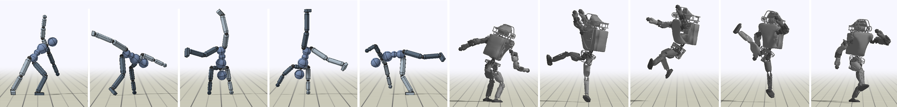

From one backflip in simulation to a foundation model on a real robot
Jingbo Wang · NVIDIA GEAR Lab
The hook
Same recipe, seven years apart
2018 · DeepMimic · a simulated character (blue) imitates one mocap clip (green)
2025 · SONIC · a real Unitree G1
one policy · one clip
one policy · 700 hours of human motion
Both are trained the same way: reinforcement learning to imitate human motion capture inside a physics simulator. This lecture is about everything that had to change in between.
BasicsImitatePriorsModelsScaleInteractReality
02
Motivation
Why simulate at all?
A kinematic model outputs poses. A physics-based controller outputs torques, and the simulator decides the motion.
2023 · PhysDiff · zoom on feet and hands, line = floor
01
Plausible by construction
Feet stay on the floor and hands do not sink into it. Contact comes from the simulator, not from a loss term.
2019 · DReCon · boxes launched at it at 5 m/s
02
Reactive for free
Each box knocks it off balance and it catches itself. The response is computed, not recorded: no dataset holds every push.
2025 · SONIC · trained in simulation, runs on a real G1
03
It is a controller
The output is a policy that commands motors, so the same recipe can leave the screen and drive a robot.
The price: you now have to control a body with dozens of joints, no direct handle on its root, and contacts that switch on and off. Every paper in this lecture is a way of paying that price.
Clips: PhysDiff project page (Yuan et al., ICCV 2023), its two zoom-in views shown side by side · DReCon (Bergamin et al., SIGGRAPH Asia 2019) · SONIC (Luo et al., 2025)
BasicsImitatePriorsModelsScaleInteractReality
03
Chapter 0 · before the papers
Foundations
Just enough physics and RL for the rest of the lecture.
AWhat a physics-based character is bodies · joints · contacts
BHow it is actuated PD control
CHow a controller is learned policy gradients · PPO
DWhere the supervision comes from rewards · the lens
04
Foundations · the body
A character is a tree of rigid bodies
Links connected by joints, motors at the joints, and nothing holding the body up.
Simulated squat. The bars are the numbers in q and v at this instant.
Simulated with the torso clamped: the motors move their joints, one group at a time.
Not simulated: the root is moved by hand. No motor could do this.
Simulated hop. Blue arrows: contact forces from the ground, zero in the air.
Kinematicthe pose is written directly
Simulatedsame angles, sent to the motors
Both are told to lift their feet. Only the kinematic one can hover.
States = (q, v): the root pose and every joint angle, and how fast each of them changes.
Motors sit only at the joints. Here: 21 hinge joints, one torque motor each.
The root has no motor. Its 6 DoF move the whole body: 21 + 6 = 27 in all.
Contact forces move the root: the legs push on the ground, and the ground pushes back.
Kinematic or physics-based. One writes q directly. The other only chooses torques; physics produces q.
Actuated DoF of the humanoids in this lecture
This model21
ASE · sword-and-shield character31
SMPL body · PHC69
SMPL-X body with fingers · Omnigrasp153
Actuated DoF from the papers: ASE, 31-D action space (its “37 DoF” count the 6 of the root as well) · PHC, 23 joints × 3 · Omnigrasp, 51 joints × 3
BasicsImitatePriorsModelsScaleInteractReality
05
Foundations · the simulator
What the simulator does at every step
$M(q)\,\dot v$
$c(q, v)$
$\textcolor{#76B900}{\tau}$
$\textcolor{#4fc3f7}{J^{\top} f}$
+
=
+
mass matrix × acceleration
2 N·m at each shoulder. Folded arm: 3.6× less inertia, turns 3.6× as far. No gravity, joint springs or dampers. 3× slow motion.
gravity, Coriolis, centrifugal
Motors off: nothing holds the joints against gravity any more. The character collapses.
joint torques · all we control
PD torques (next slide) hold the legs and move the arms and the waist. Green bars: the 21 motor torques.
contact forces from the world
Dropped from 30 cm, then shifting its weight. Blue arrows: the ground pushes back; 400 N, its weight, once it stands.
BasicsImitatePriorsModelsScaleInteractReality
06
Foundations · the simulator
Three properties of simulation to keep in mind
Why it is hard
Contact is non-smooth
Why it is easy
A black box is enough
Why it scaled
Speed is a feature
A contact happens or it does not. A 1 % change in the action, a different outcome.
Bullet
DeepMimic
PhysX
Isaac Gym: ASE, PHC
MuJoCo
every clip on these slides
The learner only calls s′ = f(s, a). It never opens the box, so any engine will do.
4096characters at once on one GPU
10 yearsof experience in about 10 days
RL needs billions of steps: ASE took 10 billion. Above: 60 simulations with random actions.
Hence reinforcement learning: trial and error on a black box, with as many trials as the hardware allows.
BasicsImitatePriorsModelsScaleInteractReality
07
Foundations · actuation
The policy sets targets; a PD controller makes the torques
The policy speaks about 30 times a second. Each action is a target angle for every joint: the green ghost.
The PD controller turns the error into torque at every simulation step: a spring toward the target, a damper on the speed.
Why not raw torques? A torque is blind until the next policy step. The same law, refreshed only at 30 Hz, overshoots and goes unstable.
The same action space in simulation and on robots. On a robot the PD loop runs in each joint’s motor controller.
Simulation · DeepMimic
Real robot · SONIC on a Unitree G1
Action spaces compared: Peng & van de Panne, “Learning Locomotion Skills Using DeepRL: Does the Choice of Action Space Matter?” (SCA 2017) · clips: DeepMimic (2018), SONIC (2025)
BasicsImitatePriorsModelsScaleInteractReality
08
Foundations · actuation
PD gains: how stiff, how damped
One simulated body, one jump of the target pose (green ghost), three pairs of gains for all its joints.
Soft$k_p = 30,\ \ k_d = 6$
Slow, and gravity holds the leg short of its target
Balanced$k_p = 300,\ \ k_d = 20$
Ten times stiffer: fast, and it stops on the target
Under-damped$k_p = 300,\ \ k_d = 2$
A tenth of the damping: overshoots by 40°, then rings
Damping ratio $\zeta = k_d \,/\, \big(2\sqrt{k_p\,I}\,\big)$in the charts: the knee, $I \approx 0.32$ kg·m²
$\zeta$ about 0.7 to 1: no ringingthen $k_p$ decides how fast and how firm
Heavier limb, same gains: rings morelarger $I$ lowers $\zeta$, so gains are set per joint
MuJoCo · DeepMind humanoid, torso pinned in the air · the same $k_p$ (N·m/rad) and $k_d$ (N·m·s/rad) on all 21 joints · clips at half speed · charts: right knee angle
BasicsImitatePriorsModelsScaleInteractReality
09
Foundations · actuation
PD gains in practice
Every joint has its own pair of gains. A simulated character and a real robot choose very different numbers.
Real settings: $k_p$ / $k_d$ (N·m/rad / N·m·s/rad)
Joint
DeepMimic humanoidsimulation · policy at 30 Hz
Unitree G1, legsreal robot · policy at 50 Hz
Chest / waist
1000 / 100
—
Hip
500 / 50
100 / 2
Knee
500 / 50
150 / 4
Ankle
400 / 40
40 / 2
Shoulder
400 / 40
—
Elbow
300 / 30
—
Neck
100 / 10
—
The character is stiff: hundreds of N·m per radian, $k_d = k_p/10$.
A torque limit caps the spring: 200 N·m at its hip.
The robot is softer: 3 to 10 times less stiffness, 12 to 25 times less damping.
Its action is an offset from a default pose: $q_{\text{target}} = q_{\text{default}} + 0.25\,a$
Gains and torque limits from xbpeng/DeepMimic (humanoid3d_ctrl.txt, humanoid3d.txt) and unitreerobotics/unitree_rl_gym (g1_config.py, g1_12dof.urdf: hip pitch)
BasicsImitatePriorsModelsScaleInteractReality
10
Foundations · the control problem
Why control is hard
All 21 motors at work · dashed: free-fall parabola
01
Under-actuated
In the air the motors move every limb, yet the centre of mass keeps its free-fall path. Only contact forces can redirect it.
One fixed pose, PD-held · green: the run without a push
02
Unstable
60 N · 0.2 sfalls within 1.5 s
An inverted pendulum: once the centre of mass leaves the feet, the error grows unless the controller reacts.
Six untrained policies: random targets, 30 per second
03
High-DoF, long-horizon
21 motors × 30 per secondall 6 fall
Chance cannot find the right commands. And each fall shows only after 40 or more actions: which one was wrong?
So a controller has to use contact to move, correct itself all the time, and choose actions whose result shows only later. How was that done before learning?
All three clips are simulated for this lecture in MuJoCo with its standard humanoid model (DeepMind): 40.8 kg, 27 degrees of freedom, 21 motors under PD control.
BasicsImitatePriorsModelsScaleInteractReality
11
Foundations · the control problem
What came before learning
Pushed (red line), it keeps walking
Hand-designed feedback
A state machine of target poses and one balance rule for the swing leg, tuned by hand for each gait.
Orange: simulation · blue: mocap
Sampling-based tracking
Sample many PD targets, simulate each, keep the best. A cluster run per clip, and the result is open-loop.
Only the goal is given: get up and stand
Trajectory optimization
Optimize the whole motion and its contacts offline. One trajectory per goal, no feedback controller.
Heess et al. 2017 · reward: go forward
Deep RL
A neural-network policy improves by trial and error on a reward. No per-motion design.
Each earlier approach worked, but needed expert design or a new optimization for every motion. Deep RL offers one recipe for all motions, provided you can say what “good” means.
Clips: Yin et al., SIGGRAPH 2007 · Liu et al., SIGGRAPH 2010 · Mordatch, Todorov, Popović, SIGGRAPH 2012 · Heess et al., arXiv 2017
BasicsImitatePriorsModelsScaleInteractReality
12
Foundations · reinforcement learning
Reinforcement learning in one slide
Learn by trial and error: no gradients through the simulator, only samples.
The action noise is the exploration. At test time we take the mean.
The reward
One number per step
Everything we want is squeezed into it: the real design problem of the field.
The cost
Billions of samples
Standing took 6 × 105 samples. ASE used 1010: ten years of practice, in ten days.
BasicsImitatePriorsModelsScaleInteractReality
13
Foundations · reinforcement learning
The policy and the return, in pictures
What the network outputs for one joint, and how far ahead the return looks.
The policy: a Gaussian around the network’s output
Every policy step, one target is sampled; the PD joint chases it.
The network moves the mean $\mu(s)$; the samples follow it.
$\sigma$ sets how far it explores. At test time: no noise, just the mean.
The return: the future, discounted
A reward $t$ steps ahead counts only $\gamma^{t}$ of its value.
All weights add up to $1/(1-\gamma)$ steps: the effective horizon.
$\gamma$ = 0.99 looks five times further than $\gamma$ = 0.95.
DeepMimic uses γ = 0.95 at 30 steps per second: its return looks about two-thirds of a second ahead, enough when every step is rewarded. For tasks that need a longer horizon, such as dribbling, AMP uses 0.99.
PPO (Schulman et al., 2017). ρ = new probability / old probability of the action. Clipping it keeps every update small.
Why everyone uses it: simple, stable and parallel. Thousands of simulated characters collect, one update, repeat.
BasicsImitatePriorsModelsScaleInteractReality
15
Foundations · the optimizer
PPO in pictures: the clipped objective
One sampled action, seen by the old and by the new policy
What PPO maximizes for that one sample
The ratio
ρ = new / old probability of one sampled action. ρ = 1: nothing has changed.
A good action
Making it more likely pays, but only up to ρ = 1 + ε. Beyond that the objective is flat.
A bad action
Making it less likely pays only down to 1 − ε. Making it more likely costs without limit.
DeepMimic uses ε = 0.2: a sample stops pushing after a 20 % change, so the new policy stays close to the old one.
BasicsImitatePriorsModelsScaleInteractReality
16
Foundations · the optimizer
PPO in pictures: the training loop
1 · Collectrun the current policy, store every step
2 · Scorecritic V + GAE(λ): an advantage for every step
3 · Updateclipped gradient steps on random minibatches
Eight characters, one untrained policy, different noise
Numbers: DeepMimic (2018)
Samples per update4,096
Policy rate30 Hz
Physics rate1.2 kHz
Discount γ0.95
GAE / TD λ0.95
Critic step size10−2
Minibatch256
Clip ε0.2
Policy step size5 × 10−5
Scale changes the numbers, not the loop: ASE (2022) runs 4,096 characters on one GPU, for over 10 billion samples.
DeepMimic (Peng et al., 2018): sections 5.1, 10 and appendix D · ASE (Peng et al., 2022): section 10.1 · clip: MuJoCo humanoid, simulated for this slide
BasicsImitatePriorsModelsScaleInteractReality
17
Foundations · supervision
The tracking reward, term by term
Each term is 1 on a perfect match and falls toward 0 as its error grows: $r = \sum_i w_i\,\exp(-k_i\,\mathrm{error}_i^{\,2})$
The reference clip says where the body should be at every instant. The simulated character chases it with a hand-written PD controller, nothing learned: it lags behind, and it cannot jump. How much reward does this step deserve?
Pose: is every joint bent like the reference? The wedge at a joint is its rotation error. The angles are squared and summed over all joints: this one term decides 65 % of the reward.
Velocity: is every joint turning as fast as the reference? The arrow at a joint is its angular-velocity error. This kernel is forgiving: with the joints 2.6 rad/s off in total, half of the term is still there.
End-effectors: are the hands and feet where they should be in the world? Small joint errors add up along an arm or a leg, and this kernel is strict: 13 cm off in total and half of the term is gone.
Centre of mass: is the body as a whole in the right place? Watch the hop: the reference leaves the floor, the character cannot, and this term drops to 0.66.
Every policy step gets one number between 0 and 1. A reward this dense tells the policy at every step how close it is.
BasicsImitatePriorsModelsScaleInteractReality
18
Foundations · supervision
The style reward: a learned judge
AMP has no reference pose to compare with. A discriminator scores how much a motion looks like the data.
A task reward alone says nothing about how to move: the policy does push the ball toward the flag, but no human moves like this.AMP adds a second reward, given by a learned judge: does this motion look like the data?
The judge is a discriminator $D(s, s^\prime)$. It sees one transition: two consecutive frames.It is trained by least squares to answer +1 for the dataset and −1 for the policy.
The policy is paid by the score of its own transitions.Nothing while it still looks like itself, full reward when it passes for data. Dense and bounded, like the tracking reward.
To earn more, the policy has to move like the data.The judge keeps training too, on the policy’s newest motion: the two get harder to tell apart, and what fooled it before stops working.
$r = 0.5\,r_{\text{task}} + 0.5\,r_{\text{style}}$The task says what to do, the judge says how. Same dribbling task, now in the style of the dataset: no reference clip to follow.
Task reward only
the same task, with a style reward?
Task + style reward (AMP)
Clips: AMP supplementary video (Peng et al., 2021), “Humanoid: Dribble”, panels “No Data” and “AMP (Ours)”
BasicsImitatePriorsModelsScaleInteractReality
19
Foundations · supervision
Four ways to tell the policy what “good” means
Task reward
Reward the outcome
The simulator pays for progress toward the goal. Easy to write, but silent about how to move.
Emergence of Locomotion
Imitation
Reward looking like data
Tracking: stay close to a reference clip, frame by frame. Adversarial: convince a discriminator.
Tracking: DeepMimic · PHC · SONIC Adversarial: AMP · ASE
World model
Differentiate a model
Learn a neural copy of the simulator. Back-propagate the loss through it: the policy gets a gradient, not just a score.
SuperTrack · ControlVAE MoConVQ · SuperMimic
Distillation
Copy a teacher
A student imitates a trained teacher’s actions, with less information or a new interface.
PULSE · MaskedMimic InterMimic · OmniH2O
Every paper in this lecture combines these four columns in its own way. The lens needs two more questions: what goal is the policy given, and how much human motion has it seen?
BasicsImitatePriorsModelsScaleInteractReality
20
Foundations · the lens
One loop, three design choices
Every paper keeps this loop and changes one of three things.
1Supervisionwhat is the learning signal?
task rewardEmergencetrack mocapDeepMimicadversarial priorAMPlearned world modelSuperTrackdistill a trackerPULSE
Nothing in it rewards jumping, crouching or turning.Walker and quadruped: no such term either.
Heess, TB, Sriram, Lemmon, Merel, Wayne, Tassa, Erez, Wang, Eslami, Riedmiller, Silver. Emergence of Locomotion Behaviours in Rich Environments. arXiv:1707.02286 · clips: the paper’s video
BasicsImitatePriorsModelsScaleInteractReality
24
How it works
The terrain is the teacher
Curriculumobstacles get harder along the track
Distributed PPOgradients averaged across workers
Reward $\approx v_x$speed along the track
Procedural terraina new random course every episode
Policy $\pi(a \mid s)$no goal input, only what it senses
MuJoCoplanar walker · quadruped · humanoid
torques
body state
$v_x$
reward
update
course
heights ahead
Humanoid · slalom walls
Humanoid · hurdles
Humanoid · gaps
Humanoid · steps
The reward: the faster the body moves along the track, the more it earns. The policy outputs joint torques directly, and nothing tells it how to move. On flat ground, running is all this reward asks for.
Procedural terrain: every episode gets a new random course, built from hurdles, gaps, platforms, slalom walls or uneven ground. An obstacle that stops the body stops the reward: getting past it is the only way to earn more.
Perception: next to its own joint angles and velocities, the policy receives the terrain heights at sample points that move with the body, a little behind it and further ahead. It sees the hurdle coming.
Curriculum: obstacles get harder along the track, so the agent meets tall hurdles only after it clears the low ones. The planar walker learns faster this way than on a course that mixes low and tall hurdles at random.
Distributed PPO: many workers run the same policy, each on its own courses. Every worker computes a gradient; the gradients are averaged into one update, and all workers continue with the updated policy.
The humanoid: the same recipe on a 3D humanoid with 21 actuated joints. It walks around walls, gets over hurdles and jumps gaps. Which gait it finds varies strongly from one random seed to the next.
Unlocked
Deep RL scales to a 3D humanoid: robust locomotion emerges from the environment.
Still open
It runs, but nobody moves like this. Reward alone does not define “natural”.
The course under the pipeline is a schematic, not a simulation · after Heess et al., 2017 (arXiv:1707.02286)
Clips: the paper’s video (Heess et al., 2017)
BasicsImitatePriorsModelsScaleInteractReality
25
SIGGRAPH 2018
Motion imitation
DeepMimic
Give RL a motion-capture clip to imitate — and the motion finally looks human.
Before · deep RL, even with mocap (GAIL, Merel et al. 2017)
No reference clip · DeepMimic’s humanoid develops a peculiar gait
the same body, with one mocap clip to imitate?
DeepMimic · one mocap clip to imitate: a human-looking run
a stunt, and a target to hit?
DeepMimic · clip + task reward: the spin-kick hits the target
Deep RL can make a simulated humanoid get somewhere. It does not make it move like a person.

Paper teaser · the humanoid’s cartwheel, a simulated Atlas robot’s spin-kick
Peng, Abbeel, Levine, van de Panne. DeepMimic: Example-Guided Deep Reinforcement Learning of Physics-Based Character Skills. ACM TOG (SIGGRAPH) 2018 · clips: BAIR blog, authors’ video
BasicsImitatePriorsModelsScaleInteractReality
26
How it works
The recipe that never left
Track one reference clip with RL: a clock goes in, PD targets come out, the clip pays the reward.
The policy sees its own state and a clock, the phase. It answers with PD targets, 30 times a second.
The clip’s poses never enter the policy. They pay the reward: how close is the body to the clip at this phase?
A task reward can be mixed in: $r = 0.7\,r^{I} + 0.3\,r^{G}$. The policy then also gets a goal $g$: here, where the target is.
Phase · where the clip is right nowthe policy gets this number, not the pose
what tells the policy that this is a run?
Blue simulated · green the clip it tracks$r^{I}$: posevelocityend-effectorscentre of mass
and if the kick has to hit something?
Spin-kick clip + task · the kick finds each targethit rate 99 % with both · clip only 19 % · task only 55 %
Clips: authors’ video (youtu.be/vppFvq2quQ0), “Humanoid: Run” and “Humanoid: Spinkick – Strike” · success rates: Table 4 · the phase figure is a schematic
BasicsImitatePriorsModelsScaleInteractReality
27
How it trains
Two small details make hard skills learnable
Same policy, same reward. What changes is where an episode starts and where it stops.
Default episodes start at the first frame and run a fixed time: the flip is hardly ever reached, most samples lie on the ground.
Reference state initialization: start at a random frame of the clip. The policy meets the landing before it can take off.
Early termination: torso or head on the ground ends the episode, with no reward after it. No samples wasted on the floor.
With both, the same reward learns the backflip. The return alone would not tell: watch the motion, not only the number.
trained without RSI
Without RSI · a small hop, never a flipnormalized return 0.730
trained without early termination
Without ET · falls, then mimes it lying downnormalized return 0.379
trained with both
RSI + ET · the full backflipnormalized return 0.791
Clips: authors’ video (youtu.be/vppFvq2quQ0), backflip ablation; blue = simulated, green = reference · returns: Table 5 · the episode figure is a schematic
BasicsImitatePriorsModelsScaleInteractReality
28
Under the hood
DeepMimic: Phase-conditioned policy, tracking reward, RSI + early termination
Value $V(s, g)$similar MLP, one linear output
PPOclip $\epsilon = 0.2$ · $\gamma = 0.95$
$r = 0.7\,r^{I} + 0.3\,r^{G}$imitation + task
Phase $\phi$ + goal $g$$\phi \in [0, 1]$, part of $s$ goal: heading, target, clip id
Imitation reward $r^{I}$pose, velocity, end-effectors, centre of mass
Reference clip $\{\hat q_t\}$0.5–5 s of mocap or keyframes, retargeted
Early terminationtorso or head touches the ground → zero reward
Reference state initsampled uniformly from the reference motion
PD targets
state $s$
pose $q_t$
target $\hat q_t$
RSI: start state
ET: end episode
task reward $r^{G}$
update
GAE($\lambda$)
TD($\lambda$)
policylearned networkfrozen / not learneddata · signalloss · rewardsimulator · robotactiontraining signal
The control loop: phase and goal in, PD targets out, state backEvery step is scored against the clip: four kernelsRSI sets where an episode starts, ET where it stopsPPO maximizes imitation + task reward; a critic helpsWhat it costs, and what the two tricks buy
Retarget one 0.5–5 s clip to the character; start π and V from random weights
Start episodes at random clip frames (RSI); stop when torso or head hits the ground (ET)
Every 4,096 samples: minibatches of 256; update V on TD(λ) targets, π on the clipped loss
Tasks: add $r^{G}$ and $g$. Terrain: pre-train on flat ground, then add heightmap conv layers
≈ 60 Msamples per skill
≈ 2 dayson an 8-core CPU
0.5–5 sof mocap per skill
197 → 36state → action dimensions
The detail that makes it work
RSI shows the policy high-reward mid-air states before it can reach them; ET stops fallen-state samples from dominating the data.
Versus its predecessor
vs Emergence (task-only reward) and GAIL (2017, reward learned by a discriminator): an explicit per-frame tracking reward toward one reference clip.
BasicsImitatePriorsModelsScaleInteractReality
29
Results
One clip in, one robust skill out
Cartwheel · sim vs mocap
Side flip
Kip-up
Speed vault
… with a task on top?
Imitate + task: hit the target
… on a much heavier body?
Retargeted to Atlas · boxes thrown
… while it is being hit?
Atlas spin-kick · perturbed
… with no mocap at all?
Keyframed T-Rex
Blue = simulated
Green = motion-capture reference
4
charactershuman · Atlas · T-Rex · dragon
1 : 1
one clip, one policyper skill
Unlocked
Mocap quality, physically robust: survives pushes, adds task rewards, retargets to other bodies.
Still open
One policy per clip, days of training each. Steering and skill switching only within a handful of clips.
Clips: BAIR blog “Towards a Virtual Stuntman” (Peng, 2018)
BasicsImitatePriorsModelsScaleInteractReality
30
SIGGRAPH Asia 2019
DReCon: a physics character you can drive with a gamepad
Bergamin, Clavet, Holden, Forbes · Ubisoft La Forge / McGill
31
How it works
Split the problem: plan kinematically, track physically
Gamepaddirection, heading, speed, style
Motion matchinga search, nothing is learned
Kinematic characterposes only, no physics
Mocap database≈ 10 min of locomotion
Policy $\pi(a \mid s)$MLP 128-128, 30 Hz
PD + simulatorsimulated body, 60 Hz
Tracking rewardhow far from the kinematic character
open-loop PD targets
kinematic state
simulated state
offsets
target
PPO
A gamepad steers an animated character. It is pure animation: nothing can push it, and nothing has to balance.Motion matching: every 10 frames, find the mocap frame that best fits the current pose and the wanted path. Play on from there.Its joint angles become the PD targets of a simulated body. Open loop comes close, but it cannot keep its balance.A small policy watches both characters and adds corrective offsets to the PD targets: 110 numbers in, 25 out.PPO trains it to stay on the kinematic character while a random user keeps steering. A fall ends the episode.
Mocap database≈ 10 min unstructured locomotion, 60 fps
Motion matchingnot learned · 27-d match every 10 frames
Kinematic characteranimation stream that follows the user
desired $v$
kinematic state
offsets
open-loop targets
simulated state, previous offsets
simulated state
tracking target
update
policylearned networkfrozen / not learneddata · signalloss · rewardsimulator · robotactiontraining signal
Not learned: motion matching turns the gamepad into posesThe loop: kinematic pose as PD target, plus smoothed offsetsFour terms compare the body with the kinematic characterSummed, then scaled by a fall factor on the head distancePPO trains policy and value against a random userWhat it costs, and what makes it work
hats $\hat p,\ \hat v,\ \hat a$ = kinematic character · $e^{-\sum_j d_j} = \prod_j e^{-d_j}$: the worst body caps each term
Training recipe
Drive motion matching with a random user: each frame, P = 0.001 of a new command
Initialize the last policy layer in ±0.01, so the open-loop targets dominate at first
Start each episode on the kinematic pose; smooth the offsets with an EMA, β = 0.2
Stop the episode on a fall (heads > 1 m apart) or after 20 s; train ≈ $3 \times 10^8$ steps (≈ 30 h)
128 × 2hidden units: a very small policy
340 µswhole pipeline, one CPU thread
60 Hzphysics (DeepMimic: 1.2 kHz)
30 Hzpolicy rate
The detail that makes it work
Inside each reward term the per-body errors multiply (exp of a sum), so the worst-tracked body caps the reward and cannot be traded against the others.
Versus its predecessor
vs DeepMimic: no phase and no fixed clip. The reference is generated online from user input, and the network is 128-128 instead of 1024-512.
BasicsImitatePriorsModelsScaleInteractReality
33
Results
What the split buys
ResponsiveIt goes where the stick points.
A gamepad user traces the black path (red = walked)
1.2 s
rise time of a 90° turnDeepMimic 2.0 s, Liu & Hodgins 5.1 s (read off their videos)
RobustA hit lands on the body, not on the plan.
Impact test: 0.2 m cubes, launched at 5 m/s
The cubes never touch the plan. The policy only has to bring the body back onto it.Robust even when trained without projectiles
CheapSmall enough for a game.
Runtime of each stage on one CPU thread (paper, Table 4)
340 µs
for the whole pipelineMLP 128-128, physics at 60 Hz (DeepMimic: 1024-512, 1.2 kHz)
Unlocked
Planner decides what, tracker decides how. Responsive, robust, and cheap enough for a game.
Still open
The tracker only knows its locomotion data, and RL is slow. Three ways out.
Clips: authors’ video · numbers: Tables 2, 3, 4 and Sec. 7.1 of the paper
BasicsImitatePriorsModelsScaleInteractReality
34
The fork
Three roads out of 2019
DReCon leaves two problems open. The following years answer them in three ways.
Still openA tracker is only as good as its reference
DReCon · blue tracks white
Still openModel-free RL is slow
Drop the reference
Chapter 2 · Priors
Do we need a reference at all?
CALM · walks to the flag
Learn the simulator
Chapter 3 · Models
Can we learn the simulator and differentiate it?
SuperTrack · tracking
Scale the tracker
Chapter 4 · Scale
One policy for all human motion, that we can direct?
PHC · kicks and a cartwheel
2019DReCon splits control into a kinematic planner and a physics tracker. Where does the field go from here?
Road ALearn what human motion looks like as a prior; let the task reward decide what to do.
Road BFit a differentiable world model, and train controllers by backpropagating through it.
Road CMake one model-free policy track all human motion, then worry about who supplies the reference.
SpoilerThe roads keep crossing: priors get distilled from trackers (2024), and the world model returns on real robots (2026).
BasicsImitatePriorsModelsScaleInteractReality
35
Chapter 2 · 2021 – 2026
Priors
Do we need a reference motion at all?
AMP adversarial motion prior · 2021
ASE reusable skill latent · 2022
CALM directable · 2023
C·ASE skill labels · 2023
Neural Categorical Priors discrete codes · 2023
Composite Motion per body part · 2023
AdaptNet fast adaptation · 2023
SMP diffusion prior as reward · 2026
36
SIGGRAPH 2021
Adversarial imitation
AMP: Adversarial Motion Priors
Don’t track the data. Ask a discriminator whether the motion looks like the data.
Obstacle course: run, leap, roll
Rewardmove forward at a target speed
Clips10 clips, 22 s: running, leaping, rolling
Walk to the target and punch it
Rewardreach the target and hit it
Clips15 clips, 248 s: walking only or punching only
Tracking reward · DeepMimic, DReCon
“How far are you from the reference at frame t?”
DeepMimic: a phase to stay in syncDReCon: a planner to pick the clip
Style reward · AMP
“Does this motion look like the data?”
no phaseno clip selectionno planner
Peng, Ma, Abbeel, Levine, Kanazawa. AMP: Adversarial Motion Priors for Stylized Physics-Based Character Control. ACM TOG (SIGGRAPH) 2021 · clips: authors’ video
BasicsImitatePriorsModelsScaleInteractReality
37
How it works
Two rewards: a task you write, a style you show
PPOmaximises the reward
Task goal $g$where the target is
Policy $\pi(a \mid s, g)$
PD + simulator
Discriminator $D$data, or policy?
Motion clipsno labels, no order
action $a$
state $s$
task reward
update
$(s, s')$
$(s, s')$
style reward
A task you write. The reward pays for coming close to the target, then for hitting it, and PPO trains the policy on it. On its own it gives this: the target is hit, by an unnatural, awkward motion.
A style you show. 15 clips of walking and of punching: no labels, no actions. A discriminator learns to tell their transitions $(s, s^\prime)$ from the policy’s: the learned judge from Foundations.
Two rewards meet in the policy. The judge’s score becomes the style reward, and PPO maximises $r = 0.5\,r_{\text{task}} + 0.5\,r_{\text{style}}$. Same task: now it walks up and punches.
Nobody picks the clip. The discriminator accepts whatever looks like the data: a walk, or a punch. The task reward decides which one pays: walking while the target is far, a punch once it is within reach.
Task reward only
how should it move?
The data: punching clips, walking clips
with both rewards?
Task + style reward (AMP)
who decides when to walk and when to punch?
Schematic: the glow marks the clips the motion resembles
Clips: AMP supplementary video (Peng et al., 2021), “Humanoid: Strike”, panels “No Data” and “AMP (Ours)”, and “Dataset: Walk + Punch”
BasicsImitatePriorsModelsScaleInteractReality
38
Under the hood
AMP: A discriminator on state transitions replaces the tracking reward
Value $V(s, g)$similar MLP, separate network
PPO$\gamma$ = 0.95 (imitation), 0.99 (tasks)
$r = 0.5\,r^{G} + 0.5\,r^{S}$task + style
Style reward$\max[0,\ 1 - 0.25\,(D-1)^2]$
Task goal $g$heading, location or strike target
Policy $\pi(a \mid s, g)$MLP 1024-512 · no phase
PD + simulatorpolicy 30 Hz · Bullet 1.2 kHz
Discriminator $D(s, s')$similar MLP · least squares + gradient penalty
Motion clipsunstructured data, no labels, no segmentation
Replay buffer$10^5$ past policy transitions
PD targets
state $s$
$(s, s')$
store
fake
real
task reward
update
GAE($\lambda$)
TD($\lambda$)
policylearned networkfrozen / not learneddata · signalloss · rewardsimulator · robotactiontraining signal
The control loop: goal in, PD targets out, state backA discriminator compares policy transitions with the clipsIts score becomes the style reward, mixed with the task rewardPPO updates the policy; a critic supplies the advantageWhat it costs, and what makes it stable
policylearned networkfrozen / not learneddata · signalloss · rewardsimulator · robotactiontraining signal
The control loop: a latent in, PD targets out, state backOne network scores each transition: real? which z?PPO updates π; actions must differ as much as latents doStage 2: π and D frozen; one high-level policy per taskWhat it costs, and the detail that makes it work
Stage 2: $r_t = 0.9\,r^{G} - 0.1\,\log\big(1 - D(s_t, s_{t+1})\big)$, with $\pi$ and $D$ frozen
Training recipe
Sample latents on the sphere, hold each for 1–150 steps; start 10 % of episodes fallen
Roll out π; reward = looks real (D) + z can be recovered from the motion (q)
Update q on policy samples, D on dataset vs policy transitions, then π and V with PPO
Freeze π and D; train one high-level policy per task at 6 Hz, with no motion data
4,096environments on one V100
> 10 Bsamples ≈ 10 simulated years in 10 days
187 clips≈ 30 minutes of mocap
131 ksamples per update
The detail that makes it work
A bounded hypersphere avoids out-of-distribution latents; the random fallen starts are why get-up recovery emerges with no get-up data.
Versus its predecessor
vs AMP: the prior becomes a reusable, pre-trained low-level policy instead of a reward that is retrained with every task.
BasicsImitatePriorsModelsScaleInteractReality
43
Speed: match the target speed (green arrow)
Steering: move one way, face another
Reach: sword tip to the red target
Strike · trained from scratch
Strike · ASE
Hit by a box: falls, gets back up
ASE · results
Five tasks, one low-level policy
Unlocked
The foundation-model shape: large-scale pre-training, then reusable motor skills.
Still open
The latent is tied to no motion: you cannot ask for a particular one, and coverage of the data is uneven.
From scratch: higher return on 4 of the 5 tasks, by moving unnaturally.
Pushed 500 times, it got up every time. No get-up clip in the data.
BasicsImitatePriorsModelsScaleInteractReality
44
SIGGRAPH 2023
CALM: ask for a motion, get that motion
Tessler, Kasten, Guo, Mannor, Chechik, Peng. Each latent is the encoding of a real motion.
45
How it works
A discriminator that also sees the latent
Motion window $M$2 s of a real clip
Encoder $E$$z = E(M)$, on a 64-d unit sphere
Policy $\pi(a \mid s, z)$low level, 30 Hz
PD + simulatorIsaac Gym
Discriminator $D(s, s' \mid z)$is it the motion of $z$?
$z$
$a$
$(s, s')$
the same $z$
real: frames of $M$
reward $r$
gradient
ASE: the latent z is drawn at random on a sphere. Every z gives some skill, but no z is tied to a clip: there is no reliable way to ask for the kick.
Encoder. The clips are cut into overlapping 2-second windows. Each window M is encoded to a point z = E(M) on the sphere: every motion has an address.
Conditional discriminator. It is given the same z, and it learns to reject real motion that is paired with another latent. A natural sprint satisfies the old judge, but it does not pass for the kick.
Reward $r = -\log\big(1 - D(s, s^\prime \mid z)\big)$: the policy is paid when its motion passes for M. The policy’s gradient flows on through z and also trains the encoder.
On demand. Encode a motion, hand z to the policy, get that motion. Raters judged 78 % of CALM’s motions similar to the requested one; with ASE, 35 %.
A map of motions. Slide z from E(sprint) to E(crouch-idle): the character slows down and sinks, walking all the way.
Four requests in a row: name top left, reference top right
Interpolating in latent space: sprint → crouch-idle
Tessler, Kasten, Guo, Mannor, Chechik, Peng. CALM: Conditional Adversarial Latent Models for Directable Virtual Characters. SIGGRAPH 2023 · clips: authors’ video · stick figures: a schematic
BasicsImitatePriorsModelsScaleInteractReality
46
Under the hood
CALM: Policy and discriminator both conditioned on the encoding of one motion
Stage 1: low-level training
Stage 2: precision training
Alignment + uniformityoverlapping windows close, random pairs spread out
PPOupdates the policy and, through $z$, the encoder
Low-level $\pi(a \mid s, z_t)$frozen together with the encoder $E$
random 2-s window $M$
$z$
gradient
PD targets
120-d state $s$
fake
real, from the same $M$
same $z$ · stop-gradient
latent $z_t$
policylearned networkfrozen / not learneddata · signalloss · rewardsimulator · robotactiontraining signal
The loop: a window M becomes z, the policy acts on (s, z)D sees the same z: real, fake, and data with a random z′Its score is the reward: PPO trains π and, through z, ETwo more losses shape where the windows land on the sphereStage 2: freeze π and E, train a policy that picks zWhat it costs, and why a motion can now be requested
Objective
$\mathcal{L}_D = -\mathbb{E}_{\pi}\log(1 - D(s, s' | z)) - \mathbb{E}_{M}\big[\log D(\hat s, \hat s' | z) + \log(1 - D(\hat s, \hat s' | z'))\big] + w_{\text{gp}}\mathbb{E}_{M}\|\nabla D\|^2$
$r = -\log\big(1 - D(s, s' | z)\big)$, $z = E(M)$: one reward trains $\pi$ and, through $z$, the encoder $E$
High level: $r = \exp\!\big(-0.25\,\|d^* - \dot x^{\text{root}} / \|\dot x^{\text{root}}\|\,\|^2\big) + \exp\!\big(-4\,\|z_t - \hat z\|^2\big)$, $\hat z = E(M)$
Training recipe
Encode a random 2-s window M; roll out π; swap M at random steps to learn transitions
Train D on real, fake and negative pairs (data with a random z′); no gradient from D into E
Train π and E with PPO; E also gets the alignment and uniformity losses
Freeze E and π; train the high-level policy; an FSM commands it or sends ẑ to π
4,096environments on one A100
5 Blow-level training steps
160 clips> 30 minutes of mocap
78 % vs 35 %controllability, CALM vs ASE
The detail that makes it work
The discriminator sees the same latent as the policy, so imitating just any motion no longer fools it: this is what counters mode collapse.
Versus its predecessor
vs ASE: z comes from an encoder of real motions, so a chosen motion can be requested; ASE’s latents had no such correspondence.
BasicsImitatePriorsModelsScaleInteractReality
47
How it is directed
A steering policy, then a state machine
State machinehand-written rules
High-level policypicks $z_t$, 6 Hz
Low-level $\pi(a \mid s, z)$frozen, with the encoder
PD + simulator
Rewardalong $d^*$ + near $\hat z$
$\hat z,\ d^*$
$z_t$
$a$
trains
isolated motions: $\hat z$ directly
Frozen low-level policy. Ask for a sprint with ẑ = E(sprint) and it sprints. But nothing tells it where to.
Precision training. A high-level policy picks zt. It is rewarded for moving along d* and for keeping zt near the requested ẑ.
State machine. Hand-written rules choose ẑ and d*: move to the target, slash, celebrate. Nothing is trained.
No task training. The location and strike tasks score 0.96 – 1.0, in three locomotion styles with three endings each.
Low-level policy alone: asked to sprint, then to walk
a sprint, a crouch-walk … in a direction you choose?
Keeps the crouch-walk (ẑ), turns with the arrow (d*)
reach a target, strike it, celebrate: a new reward for every task?
State machine: move to the target, slash, celebrate
Unlocked
Directable skills: a latent per motion, one steering policy, and a state machine replace per-task rewards.
Still open
With many motions, some are still imitated far more than others. Coverage.
Tessler, Kasten, Guo, Mannor, Chechik, Peng. CALM: Conditional Adversarial Latent Models for Directable Virtual Characters. SIGGRAPH 2023 · clips: authors’ video and project page
BasicsImitatePriorsModelsScaleInteractReality
48
SIGGRAPH Asia 2023
Conditional skill embeddings
C·ASE: give every skill a label
Label every clip with its skill. The label becomes the control handle: ask for a skill by name.
The user picks the skill (label at the top) and the direction (blue arrow)
the same handle, on a path that the user gives?
Path following: the user gives the path (blue line) and picks the skill
How do you ask for a skill?
ASE · sample a latent za random point on a sphere, tied to no clip
CALM · show a motionz is the encoding of an example clip
C·ASE · name it: a skill label cthe latent z only picks the variation
Dou, Chen, Fan, Komura, Wang. C·ASE: Learning Conditional Adversarial Skill Embeddings for Physics-based Characters. SIGGRAPH Asia 2023 · clips: authors’ video
BasicsImitatePriorsModelsScaleInteractReality
49
How it works
Divide the data by skill, then conquer
Skill $c$ + latent $z$which skill, which variation
Low-level ${\pi(a \mid s, z, c)}$one policy, all skills
PD + simulatorIsaac Gym
Discriminator ${D(s, s', c)}$like skill $c$?
Labelled clipsone subset per skill label
Encoder ${q(z \mid s, s', c)}$which $z$ was it?
Focal skill samplinglow score, drawn more often
$a$
$(s, s')$
real
score $b_c$
Reward of the policy
$r_t = -\log\big(1 - D(s_t, s_{t+1}, c)\big)$
$+\ \beta\,\log q(z_t \mid s_t, s_{t+1}, c)$
Every clip gets a skill label c. The policy takes the label as one more input.c says which skill. The latent z, kept from ASE, now only says which variation.
The discriminator gets the label too. It no longer asks “like the data?” but “like skill c?”Standing idle is real motion, but it is not a kick.
The encoder gets the label too. Inside skill c it must tell from the motion which z was used.So different z have to look different: variations of one skill.
Focal skill sampling. A skill whose motion the discriminator still rejects (low average score bc) is drawn more often as reference:$w_c \leftarrow (1-\alpha)\,w_c + \alpha\,\big(1 - b_c \,/ \textstyle\sum_{c^\prime} b_{c^\prime}\big)$
Authors’ clip: one fixed skill label, random latents
Filtered motion coverage · 87 clips
C·ASE≈ 91 %
CALM71 %
ASE66 %
A clip counts only if enough of the random rollouts match it. On 265 skills: 82 % · CALM 58 % · ASE 51 %
ASE, epoch 30,000: boxed characters stay inactive
C·ASE, same epoch: actively practising various skills
Unlocked
Explicit skill control and balanced coverage across 265 skill types: one hard matching problem becomes many easy ones.
Still open
Still adversarial, and it needs labels. Is the GAN necessary at all?
Clips: authors’ video (youtu.be/Cgq6JbQ1VW4) · stick figures and bars are schematic, not data
BasicsImitatePriorsModelsScaleInteractReality
50
Under the hood
C·ASE: ASE with a skill label: π, D and encoder all conditioned on c
Stage 2: high-level control
PPO + value $V$$V$: MLP similar to $\pi$ · + diversity term on $\pi$
Reward $r_t$$-\log(1 - D) + \beta \log q$
Focal skill samplingskills with a low $D$ score are sampled more
Skill $c$ + latent $z$64-d embedding of $c$ · 16‑d unit sphere for $z$
policylearned networkfrozen / not learneddata · signalloss · rewardsimulator · robotactiontraining signal
The control loop: skill c and latent z in, PD targets outTwo judges read the motion and the label: D and encoder qTheir two scores are the reward; PPO updates the policyFocal sampling: low D score, more reference samplesStage 2: a 6 Hz policy steers; the user names the skillWhat it costs, and the detail that makes it work
Upper-level policy$\pi^h(k \mid s, g)$ · sees the goal
$f$
$z^e$
$e_k$
tracking reward · PPO trains both halves
distill
code $k$
count reward
KL
code $k$
task reward
?
Stage 1: one policy tracks every clip, DeepMimic-style. It is cut in two, and only the encoder sees the clip.Between the halves, the encoder’s output snaps to the nearest of K codes: one code per control step.Stage 2: a prior learns the encoder’s pick from the state alone. Sample from it: motion, with no clip to track.The prior copies the data: a combination of punches stays rare. A count reward pays for rarely visited clip frames until visits even out.Stage 3: a task policy picks the code, the decoder stays frozen, and a KL term keeps its choice near the prior.
Tracking the boxing clips
Schematic: the nearest code wins
Codes sampled from the prior
count reward $r = \sqrt{N_k / \hat N(s)}$
Schematic: visits even out
Two-player boxing
Unlocked
A discrete skill space without a GAN: sharp, distinct skills, good enough for competitive boxing.
Still open
Every new behavior still means a new policy. Can skills be combined, or adapted?
Clips: project page (tencent-roboticsx.github.io/NCP) · the two figures are schematics
BasicsImitatePriorsModelsScaleInteractReality
53
Under the hood
NCP: A VQ codebook of skills learned by tracking, plus a categorical prior
Stage 1 · imitation
Stage 2 · prior: distill, then shift
Stage 3 · downstream task
Motion clips≈ 26 or 30 min in total sampled $\propto (1 - R_m)^3$
Encoder $p^e(z^e \mid s, f)$MLP 1024-1024-512 sees the next 2 clip frames
Codebook $\mathbf{e}$$K$ = 512 or 256 codes, 64-d keeps the nearest code
PD + Isaac Gymboxing: opponent is a past policy snapshot (PFSP)
Task rewardstrike or boxing damage + facing + velocity terms
$f$
$z^e$
$z^q$
PPO + commitment loss → encoder, codebook, decoder
distill
sampled code $e_k$
PPO: prior shifting
KL
code $e_k$
PPO + entropy bonus
policylearned networkfrozen / not learneddata · signalloss · rewardsimulator · robotactiontraining signal
Stage 1: encoder → nearest code → decoder → PD targetsA tracking reward and the commitment loss train all threeStage 2: a prior that sees only s copies the encoder’s picksA count reward shifts the prior to rarely visited framesStage 3: a task policy picks the codes, held near the priorWhat it costs, and why the prior has to be shifted
Track clips with PPO through encoder → nearest code → decoder; favor hard clips
Roll out the prior through the frozen decoder; fit it to the code the encoder picks
Shift the prior with PPO on the count reward so all clip frames are visited evenly
Train the upper-level policy over codes: PPO + KL to the prior; boxing adds self-play
≈ 2 daysimitation stage
12 hprior training
≤ 4 hsword-and-shield strike task
4–4.5 daystwo-player boxing
The detail that makes it work
A rare combination punch is rarely sampled from the distilled prior, so a count-based reward shifts the prior until every clip frame is visited about evenly.
Versus its predecessor
vs ASE / CALM: no discriminator. Skills are discrete codes learned by tracking; compared against β-VAE and GAN-based priors.
BasicsImitatePriorsModelsScaleInteractReality
54
SIGGRAPH 2023
Spatial composition
Composite Motion Learning with Task Control
Different body parts imitate different motions, while the character also solves a task.
Policy $\pi(a \mid s, g)$one network, whole body
PD + simulatorthe state of every body link
Discriminator $D^{\text{upper}}$upper body only: punch clip, or policy?
Discriminator $D^{\text{lower}}$lower body only: run clip, or policy?
Imitation rewardsone for the upper body, one for the lower
One critic per rewardstandardized advantages, summed: $\sum_k \omega_k \bar{A}^k$
Task rewardse.g. follow a target heading
Frozen meta policypre-trained locomotion
PPO update
action mean: $\mu + w\,a^{\text{meta}}$
One policy, the whole body. The goal: punch like one clip and run like another, at the same time. No clip shows both.
Split the body. Each discriminator sees only its own body links and its own clips, and pays its own reward.
One critic per reward. Each advantage is standardized, then PPO adds them with fixed weights: no reward drowns out another.
Reuse what works. A frozen locomotion policy adds its action, scaled per degree of freedom by weights the new policy outputs.
Insets: the two references · centre: the trained character
no clip shows both: who judges the motion?
Schematic: one motion, two partial views
Schematic: one dot = one sample’s advantage
a new upper-body skill: learn to walk again?
Red: frozen meta policy · blue: new policy
Xu, Shang, Zordan, Karamouzas. Composite Motion Learning with Task Control. ACM TOG (SIGGRAPH) 2023 · clips: authors’ video
BasicsImitatePriorsModelsScaleInteractReality
55
Under the hood
Composite: One discriminator per body-part group, one critic per objective
Meta policy $\pi^{\text{meta}}$optional · pre-trained, fixed, e.g. locomotion
state $s_t$, 4 frames
$g^{\text{meta}}_t$
$s^{\text{meta}}_t$
$a^{\text{meta}}_t$
$o^{\text{lower}}_t$: lower-body link poses
one reward per group
one reward per task
update
policylearned networkfrozen / not learneddata · signalloss · rewardsimulator · robotactiontraining signal
The control loop: goal in, PD targets out, state backPer body part: a discriminator ensemble, its clips, its rewardOne critic head per reward; PPO on the weighted advantagesOptional: a frozen meta policy’s action is added, scaled by wWhat it costs, and what keeps the objectives balanced
Per-part discriminators let upper and lower body imitate different clips; one critic and one standardized advantage per objective keep them balanced.
Versus its predecessor
vs AMP: spatial composition (two motions at once), which AMP left open. Builds on the authors’ GAN-like approach (ICCGAN, 2021).
BasicsImitatePriorsModelsScaleInteractReality
56
Results
Two motions and task goals, in one policy
Each task reward is one more objective, with its own critic.
Lower body: locomotion · upper body: aiming
Arms: juggling · rest of the body: walk to a target
Lower body: footwork · upper body: racket swing
Twist + lunge · left: ours · right: rewards added
Rewards simply added: one motion is lost
Aiming + Run, to similar performance
What the frozen policy saves
Gamepad: steer, aim, switch crouch / walk / run
Steered live from a gamepad
Unlocked
Two motions at once: the composition AMP left open, with a single multi-objective policy.
Still open
A trained policy is still rigid. A new style or terrain means starting over?
Clips: authors’ supplementary video (youtu.be/mcRAxwoTh3E)
BasicsImitatePriorsModelsScaleInteractReality
57
SIGGRAPH Asia 2023
Policy adaptation
AdaptNet: edit a trained policy
A locomotion policy takes ≈ 26 hours to train. Adapt it to a new style, body or terrain instead of training again.
Few-shot style transfer
New body shapes · split view: with / without AdaptNet
Rough terrain
Obstacles · grey ghost: pre-trained policy
Xu, Xie, Andrews, Kry, Neff, McGuire, Karamouzas, Zordan. AdaptNet: Policy Adaptation for Physics-Based Character Control. ACM TOG (SIGGRAPH Asia) 2023 · clips: authors’ video
BasicsImitatePriorsModelsScaleInteractReality
58
How it works
Freeze the policy. Add branches that start at zero.
Latent injectorcopy of the encoder → zero-init FC
Internal adaptorsa zero-init FC beside each internal FC layer
PPO, branches onlynew discriminators and critic
State $s_t$character + goal
Encoder $\mathcal{E}_\xi$pre-trained · frozen
Latent $z^0_t$the encoded state
FC layers $\pi_\theta$pre-trained · frozen
PD + simulatorIsaac Gym
$s_t$ and, if needed, a new input $c_t$: e.g. a height map
offset
$+\,\Delta z^i$
task + imitation reward
The trained policy stays as it is: encoder → latent z⁰ → FC layers → PD targetsLatent injector: a copy of the encoder that adds an offset to the latent z⁰Internal adaptors: a new FC layer in parallel with each internal FC layer, for larger changesBoth branches start at zero: training begins at the old behaviour and changes only the branchesAt run time, a scale α on both branches blends the original policy (α = 0) into the adapted one (α = 1)
The pre-trained policy: a plain, steerable walk
Scale α from 0 to 1: the walk becomes a jaunty skip
Unlocked
Policies become editable: new styles, bodies and terrains from a pre-trained controller, in minutes to hours.
Still open
Every prior so far is tied to the policy it was trained with. A prior you train once and hand around?
Clips: authors’ video (youtu.be/WxmJSCNFb28) · imitation errors: Table 2 of the paper · the two diagrams in the cards are schematic
BasicsImitatePriorsModelsScaleInteractReality
59
Under the hood
AdaptNet: Adapt a pre-trained policy by editing its latent space
Stage 2 · AdaptNet, trained
Stage 1 · pre-trained policy, frozen
Latent injector $\mathcal{I}_\phi$copy of $\mathcal{E}_\xi$ (+ CNN for $c_t$) → zero-init FC
Internal adaptors $\mathcal{F}^i_\eta$full-rank, zero-init FC beside each FC layer
Multi-critic PPOpolicy update: only $\phi$, $\eta$ · new 2-head critic
Imitation rewardmean of $\mathrm{clip}(D_n, -1, 1)$
State $s_t = \{o_t, g_t\}$784-d: body links over 4 frames + 4-d goal
Encoder $\mathcal{E}_\xi$GRU, 256-d hidden, on $o_t$ · concat goal $g_t$
Latent $z^0_t$ · 260-dthe bottleneck of the policy network
32 new discriminatorsfrom scratch · hinge loss + gradient penalty
Reference motion0.8–2.2 s style clip, or the walk / run set
$s_t$, optional new input $c_t$
offset
$+\,\Delta z^i$
character state $o_t$
real
task reward
policylearned networkfrozen / not learneddata · signalloss · rewardsimulator · robotactiontraining signal
Stage 1: the pre-trained policy, frozen, in the control loopTwo zero-initialized branches: the only policy weights trainedNew discriminators, trained from scratch, score the motionPPO updates only φ and η; two penalties keep the change smallWhat it costs, and why starting at zero matters
Pre-train a walk or run policy with multi-critic PPO + discriminators (≈ 26 h)
Freeze θ and ξ; copy the encoder into the injector; zero-init the last FC of each branch
Discard the old discriminators and critic; train new ones from scratch on the new task
Update only φ and η with PPO: 10–30 min for a new style, up to 4 h for rough terrain
10–30 minsimple adaptation tasks
≤ 4 hrough-terrain adaptation
≈ 26 hpre-training the base policy
512parallel environments
The detail that makes it work
Zero-initialized adapters start from the pre-trained behaviour, so exploration begins near a working gait instead of from random actions.
Versus its predecessor
vs fine-tuning or training from scratch: reuses a policy in minutes. Its adaptors are full-rank (LoRA did worse here); zero-init low-rank adapters return in GPC (2026).
BasicsImitatePriorsModelsScaleInteractReality
60
SIGGRAPH 2026
Reusable priors
SMP: score-matching motion priors
Pre-train a motion diffusion model once. Freeze it. Use it as the style reward for every policy.
AMP with a reused discriminator: steering
AMP · 2021
One discriminator per policy, trained together with it, on the motion data. Reused frozen, it gets exploited.
Reused for steering: task return 0.24
the same task, judged by a frozen diffusion model?
SMP, the same task: steering with a frozen diffusion prior
SMP · 2026
One diffusion model, trained first and alone, then frozen. Policies only query it: for a reward and for start states.
Frozen prior on steering: task return 0.91
Mu, Zhang, Shi, et al., Peng. SMP: Reusable Score-Matching Motion Priors for Physics-Based Character Control. ACM TOG (SIGGRAPH) 2026 · clips: authors’ video
Stage 1, done once: a diffusion model learns to predict the noise that was added to real 10-frame clips.Policy training: the policy’s last 10 frames get noise added, exactly like the data did.The frozen model predicts that noise. It was trained on real motion only, so it answers as if this clip were real.A wrong prediction means the clip is not like the data. The error becomes a reward between 0 and 1.Add any task reward, train with PPO. The model is never updated, so the next policy reuses it.Episodes start from states sampled from the model too: the dataset is never opened again.
noise that was added, $\epsilon$noise predicted by $f$, $\hat\epsilon$error
Frozen prior $f$reused across tasks · optional style label $c$
Generative state initthe frozen prior samples the start states
Motion datasetneeded only here · 3 s to 20 h (100STYLE)
Diffusion model $f$2-layer transformer encoder, 3 M parameters
PD targets
state $s$
clip $\tilde{x}$
noise $\epsilon_i$
predicted $\hat\epsilon_i$
task reward
update
clips $x^0$
freeze
policylearned networkfrozen / not learneddata · signalloss · rewardsimulator · robotactiontraining signal
The control loop: goal in, PD targets out, state backStage 1: pre-train a small diffusion model, then freeze itEvery step: noise the last 10 frames, score the predictionPrior + task reward; PPO updates π and V, never the priorStart states are sampled from the prior: no dataset leftWhat it costs, and the detail that makes it work
Pre-train the diffusion model on motion data: 400k–800k iterations, within 5 h on one RTX 4090
Freeze it. Every step: noise the last 10 frames at 3 fixed levels; the model predicts each noise
Update π and V with PPO on prior + task reward; reuse the same prior for the next task
Drop the dataset: start episodes from states sampled from the model (GSI)
≈ 3 Mparameters in the prior
≤ 5 hto pre-train the prior (one RTX 4090)
100+ stylesin one prior (100STYLE, > 20 h)
≤ 12 hfor most task policies
The detail that makes it work
A randomly sampled noise level gives a high-variance reward. SMP averages three fixed levels, {22, 15, 8}: high noise corrects large errors, low noise fine ones.
Versus its predecessor
vs AMP: the prior is pre-trained once and frozen instead of retrained with every policy. It costs more per policy: 11.5 h vs 6.2 h on one task.
BasicsImitatePriorsModelsScaleInteractReality
63
Why it matters
One prior, many policies, no dataset
The prior’s data: running (LaFAN1)
Dodgeball, trained with that prior
One prior, many tasks
The same frozen prior trains steering, target location and dodgeball. Dodging is not in its data.
Target location in many styles
AeroPlane + HighKnees, Elated + FlickLegs
One model, 100 styles
A style label picks the prior. Blending the predictions for two labels gives a style that is not in the data.
Carrying, from a human–object prior
Getting up
Other data, same recipe
Train the model on other motion: carrying succeeds 99.7 % of the time, getting up 99.8 %.
Unitree G1, steered with a gamepad
Unitree G1: spin kick
On a real robot
Policies trained in simulation with this reward run on a Unitree G1.
Unlocked
The prior is finally a pre-trained model, not a by-product of one policy: train once, reuse across tasks.
Still open
Still one policy per task, and style datasets of about 20 hours. Other roads went for scale.
Clips: authors’ video (youtu.be/jBA2tWk6vzU)
BasicsImitatePriorsModelsScaleInteractReality
64
Chapter 3 · 2021 – 2024
Models
What if we learn the simulator, and differentiate through it?
SuperTrack SIGGRAPH Asia 2021
ControlVAE SIGGRAPH Asia 2022
MoConVQ SIGGRAPH 2024
65
SIGGRAPH Asia 2021
SuperTrack: motion tracking by supervised learning
Fussell, Bergamin, Holden · Ubisoft La Forge No reinforcement learning.
66
How it works
Learn the simulator, then differentiate through it
Kinematic target $K$the next mocap frame
Policy $\Pi$outputs PD targets $T$
PD + simulatora black box: no gradient
Data bufferframes of $(S, K, T)$
Tracking losspredicted $P$ vs target $K$
World model $W$state, $T$ → next state
$T$
state $S$
every frame
regression on 8-frame windows
$T$
$P$
gradient
The tracking loop. To reinforcement learning the physics engine is a black box: it returns the next state, never a gradient.
Collect. 256 characters run in the simulator. Every frame is stored: the state S, the target K, the PD targets T.
Fit a world model.W predicts the next state from a state and its PD targets. Rolled out over 8 stored frames; the label is what the simulator did.
Train the policy inside W. Roll Π and W out for 32 frames. The loss is the distance to the target; its gradient flows back through W and updates only Π.
Alternate one gradient step each; the new Π goes back to the simulator. Two supervised problems: no reward, no critic, no sampled policy gradient.
Yellow = simulated character · green = its kinematic target
Trail of frames: red = world-model prediction, yellow = simulation
Yellow = simulation · green = kinematic target
Clips: authors’ video (Fussell, Bergamin, Holden, SIGGRAPH Asia 2021) · the frame strip is a schematic, not data
BasicsImitatePriorsModelsScaleInteractReality
67
Under the hood
SuperTrack: Replace RL with supervised learning through a learned world model
Tracking lossL1 in local space: $P$ vs $K$ + offset penalty
World model $W(P_i, T_i)$MLP 5 × 1024 ELU → accelerations, integrated
World-model lossL1 on the unrolled window: simulated $S$ vs $P$
Cyclic data buffer≈ 150,000 samples of $(S, K, T)$ · off-policy
target $K$
offsets $o$
predicted $P$
next state $P_{i+1}$
gradient through $W$
state $S$
episodes
8-frame windows: $S$, $T$
update
32-frame windows: $S_0$, $K$
policylearned networkfrozen / not learneddata · signalloss · rewardsimulator · robotactiontraining signal
The gym: target and state in, PD targets outEvery simulated frame goes into one cyclic bufferFit W: unroll it over 8 stored frames, L1 to the simulatorFit Π: unroll it inside W; the loss flows back through WAlternate one step each: what it costs, what makes it work
$x$: local pos, vel, rot, ang. vel, height, up · $w$ balanced at the start, regularizers ≈ 100× less
Training recipe
Run the noisy Π on 256 simulated characters (RSI resets); episodes fill the buffer
Fit W: sample 2,048 windows of 8 frames, unroll W, L1 loss to the simulated states
Fit Π: sample 1,024 windows of 32 frames, unroll Π in W, back-propagate into Π only
Alternate one RAdam step each; copy Π to the gym; ≈ 100–200k iterations, 20–40 h
≈ 5,000simulator samples per second
48–512frames per collection episode
0reward functions or value networks
The detail that makes it work
The world model predicts accelerations in the character’s local frame and is integrated forward, so one model serves every position and heading.
Versus its predecessor
vs DReCon (same lab): a similar tracking set-up, but PPO’s sampled gradient estimates are replaced by analytical gradients through a learned world model.
BasicsImitatePriorsModelsScaleInteractReality
68
Results
Against PPO, in the same gym
One policy for ≈ 6.5 hours of LaFAN mocap. PPO does well on small databases, not on this one.
SuperTrack, in PhysX
PPO, in PhysX
70 %
of the collected episodes thrown away: PPO trains twice as slowly, SuperTrack is largely unaffected.
× 10
Walk over-sampled (motion-matching data): after 10 hours PPO is stable only on walking; SuperTrack runs, jogs and crouches after ≈ 1.5 hours.
Tracking on rough terrain
Gamepad control: human and dog
The catch: a short horizon. On long roll-outs W (violet) drifts from the simulator (white), so Π is trained only 32 frames ahead.
Unlocked
No RL at all: with a learned, differentiable model, tracking is supervised learning, and more sample-efficient than PPO.
Still open
Still a tracker: it needs a reference. Can the same trick learn a generative skill space?
Fussell, Bergamin, Holden. SuperTrack: Motion Tracking for Physically Simulated Characters using Supervised Learning. ACM TOG (SIGGRAPH Asia) 2021 · clips: authors’ video · figure: schematic
BasicsImitatePriorsModelsScaleInteractReality
69
SIGGRAPH Asia 2022
Generative control, model-based
ControlVAE: a latent space of motor skills
A VAE whose decoder is the control policy, trained by direct supervision through a learned world model.
Motion clips≈ 30 min with mirroring
Encoder $q(z \mid s, \tilde{s}')$sees the next frame
Policy $\pi(a \mid s, z)$the decoder
World model $\omega(s, a)$a learned simulator
Reconstruction $\mathcal{L}_{\text{rec}}$distance to that frame
Prior $p(z \mid s)$sees only the state
PD + simulatorblack box: no gradient
$\tilde{s}'$
$z$
$a$
$s'$
target: the same mocap frame $\tilde{s}'$
$a$
$s$
its rollouts fit $\omega$
$\mu_p$
A VAE for motion: the encoder writes the next mocap frame $\tilde{s}'$ as a code $z$; the decoder is the control policy, acting through PD and physics.The simulator passes no gradient. A world model fitted to its rollouts does: the error flows back into policy and encoder.A prior guesses $z$ from the state alone. The encoder may only correct it by $\mu_q$, and the KL term keeps $\mu_q$ short.Why must the prior see the state? With a fixed $\mathcal{N}(0, I)$ instead, random samples turn unstable (authors’ ablation).
White: simulation · red: its reference
what trains them?
World-model rollout (red) vs simulation
and with no mocap frame to look at?
Latent space, schematic (2 of 64 dims)
why not a plain $\mathcal{N}(0, I)$ prior?
Ablation: random $z$ from a fixed $\mathcal{N}(0, I)$
Downstream goal $g$height, heading, steering or skill control
$\tilde{s}_{t+1}$
$\mu_p$
latent $z_t$
state $s_t$
$(s, a)$
$\mathcal{L}_w$
next state
predicted $s_{t+1}$
reference
gradient through $\omega$
$\mu_p$
$z_t$
policylearned networkfrozen / not learneddata · signalloss · rewardsimulator · robotactiontraining signal
Collection: the posterior tracks a clip in the simulatorSimulated states fill a buffer that fits the world model24-step rollouts in ω; the loss flows back into π and qThe prior: q only adds a residual; KL grows with its squareDownstream: a task policy picks z, trained through ωWhat it costs, and what it changes
$\mathcal{L}_{\text{kl}} = \sum_t \gamma^t\,\|\mu_q(s_t, \tilde{s}_{t+1})\|_2^2 \,/\, 2\sigma_p^2$, weighted by $\beta$, raised from 0.01 to 0.1
World model: $\mathcal{L}_w = \sum_t \|\bar{s}_{t+1} - \mu_w(s_t, \bar{a}_t)\|^2_{W'}$ along 8 recorded steps
Downstream: $\sum_t \big[\mathcal{L}_g + \mathcal{L}_{\text{fall}}\big] + w_z \sum_t \|\mu_g\|_2^2$ with $w_z = 20$, on 16-step rollouts
Training recipe
Collect 2,048 simulator states per epoch: track clips with z from q, or the prior (prob. 0.4)
Fit the world model on 512 buffer clips of 8 steps, 8 updates per epoch
Roll out q, π and ω for 24 steps from 512 buffer states; backpropagate L, 8 updates per epoch
Downstream: freeze ControlVAE; train a task policy z ~ N(μp + μg, σ²) through the world model
≈ 50 h20,000 iterations
1 GPUGTX 2080 Ti + 4 CPU threads
64-dGaussian latent
5 × 10⁴states in the replay buffer
The detail that makes it work
A state-conditional prior with posterior = prior + residual. A standard N(0, I) prior gives jerky skill switches and falls.
Versus its predecessor
vs SuperTrack: the same model-based trick, now for a generative latent space. vs ASE: the skill space is learned with no discriminator and no policy gradient.
Training is over: drop the encoder, freeze the rest. Draw $z$ from the prior at every control step.A task policy takes over the choice of $z$: it reads the goal and shifts the prior’s mean by $\mu_g$.It is trained like the VAE: a task loss, back-propagated through the frozen world model. Half an hour for heading control.It was trained inside the world model, and it holds in the real simulator: pushed over, it gets up.All of this from about 30 minutes of motion (mirrored clips included) and a 64-d latent, trained on one GPU.
Random samples from the latent prior
and to reach a goal?
Latent space, schematic (2 of 64 dims)
what trains it, and what comes out?
Skill + direction from the user
and if it is pushed?
Pushed over, recovers
Unlocked
ASE’s promise without the GAN: a latent skill space learned by reconstruction, sampled or steered by a high-level policy.
Still open
A modest dataset and a continuous latent. Does it scale to tens of hours, and can it talk to language models?
Clips: project page and supplementary video (Yao et al., 2022)
BasicsImitatePriorsModelsScaleInteractReality
72
SIGGRAPH 2024
MoConVQ: motor skills as discrete tokens
VQ-VAE codebooks of physical skills, learned from tens of hours of motion
73
How it works
Motion in, tokens in the middle, physics out
Loss $\mathcal{L}$$\|M - \tilde M_{\mathcal{W}}\|$ + VQ and action terms
The encoder turns 1.2 s of motion (24 frames) into 6 latent vectors: one for every 0.2 s.Each vector snaps to the nearest entry of a codebook of 512: the clip is now 6 integers, its tokens.What the snap lost is quantized by the next codebook, and again: N = 8 residual layers, from coarse to fine.The decoder is a control policy: from the tokens and the simulated state it computes PD targets, and physics plays the motion back.The simulator is a black box: no gradient. A world model is fitted to its rollouts, and in training the policy acts inside it.One loss compares the input clip with its rollout in the world model; the gradient reaches policy, codebooks and encoder.ControlVAE learned from about 30 minutes of motion. This one model holds 23.2 hours.
and how is it trained?
what is left
state $s^t$
and back from tokens to motion, with physics in the loop?
Blue: unseen, corrupted mocap · white: simulated
23.2 h
of motion in one modelLaFAN + AMASS
6.3 cm
mean body position erroron 2 h of unseen HDM05 motion
≈ 6 days
on a single RTX 309040k epochs
BasicsImitatePriorsModelsScaleInteractReality
74
Under the hood
MoConVQ: Residual-VQ tokens for motor skills, decoded by a model-based policy
MoConGPTtemporal + depth transformers · text via T5
LLM (Claude-2)1600 in-context examples, no fine-tuning
$M$
target $M$
$v^k$
$z^k$
$u^t$
state $s^t$
rollouts
$\mathcal{L}_{\mathcal{W}}$
$\hat a$
$\hat s$
reconstruction $\tilde M_{\mathcal{W}}$
gradient through $\mathcal{W}$
indices $I^k$
VQ index $I^k_0$
policylearned networkfrozen / not learneddata · signalloss · rewardsimulator · robotactiontraining signal
The autoencoder: clip in, tokens in the middle, physics outA world model is fitted to simulated rollouts from a bufferThe loss flows back through W: policy, codebooks, encoderAfter training, a GPT or a prompted LLM writes the tokensWhat it costs, and what makes it work
World model: $\mathcal{L}_{\mathcal{W}} = \|\tilde M_{\text{sim}} - \tilde M_{\mathcal{W}}\|$ on sequences from the replay buffer
Codebooks: EMA update $\mathcal{B} \leftarrow (1-\gamma)\,\mathcal{B} + \gamma\,\hat{\mathcal{B}}$, $\gamma = 0.99$; inactive codes are reset
Training recipe
Track random clips in the real simulator with the current model; add 1024 frames to the buffer
Replay buffer sequences in the world model $\mathcal{W}$ and minimize $\mathcal{L}_{\mathcal{W}}$
Track a 24-frame clip inside $\mathcal{W}$; update policy, codebooks and encoder (RAdam, lr 1e-5)
Apply quantizer dropout: decode from a random number of leading RVQ layers each iteration
≈ 6 days40k epochs on one RTX 3090
23.2 hof motion · LaFAN + AMASS
8 × 512residual codebooks
0.2 sof motion per token
The detail that makes it work
Residual VQ yields a coarse-to-fine code: the first layer alone is enough for an LLM to plan with, later layers add detail.
Versus its predecessor
vs ControlVAE: discrete tokens and far more data (23.2 h). vs NCP: model-based RL through a learned world model instead of PPO.
BasicsImitatePriorsModelsScaleInteractReality
75
Tokens in use
A vocabulary of skills that language models can speak
Texta motion description, or a task
MoConGPTa GPT over tokens · text via T5
LLM (Claude-2)1600 examples in its prompt
Tokensintegers · 0.2 s of motion each
The same decoderpolicy + simulator
every layer
first layer only
who writes the tokens?
Whatever writes tokens now drives the character. The simplest writer is a rule: replay one clip’s tokens, with jumps.MoConGPT is a GPT over motion tokens: given a text, it predicts the next token, one residual layer after another.An LLM, not fine-tuned, picks the vocabulary up from 1600 examples in its prompt, and answers a new request in integers.An LLM also reasons: told of a key on the ground and a door, it plans eight moves and writes each one in tokens.
One clip’s tokens, replayed with jumps
MoConGPT: “a man is kicking with right leg”
LLM: walk for a long time, kick, then dance
LLM: key-and-door plan, in an empty scene
Unlocked
Skills become a vocabulary: one tokenizer serves tracking, text-to-motion and LLM agents, at tens of hours of data.
Still open
A learned model is an approximation. The model-free camp bet on brute-force scale instead.
Yao, Song, Zhou, Ao, Chen, Liu. MoConVQ: Unified Physics-Based Motion Control via Scalable Discrete Representations. ACM TOG (SIGGRAPH) 2024 · clips: project page
BasicsImitatePriorsModelsScaleInteractReality
76
Chapter 4 · 2023 – 2026
Scale
One policy for all human motion, and a way to direct it.
PHC ICCV 2023
PULSE ICLR 2024
MaskedMimic SIGGRAPH Asia 2024
CLoSD ICLR 2025
GPC SIGGRAPH 2026
77
ICCV 2023
PHC: Perpetual Humanoid Control
One tracker for (almost) all of AMASS — that gets back up by itself
78
How it works
Grow the policy one hard subset at a time
Primitive $P^{(1)}$all of AMASS: 11,313 sequences
Primitive $P^{(2)}$only what $P^{(1)}$ fails
Primitive $P^{(3)}$only what $P^{(2)}$ fails
copy weights
its failures
copy weights
its failures
One network, all of AMASS. It keeps learning new sequences and forgetting old ones, so its success rate stops improving.
Freeze it and collect the sequences it fails. A new primitive starts from a copy of its weights and trains only on those.
Repeat. Each round the set of failures is smaller and harder, and the new primitive has only that to learn. What is frozen cannot be forgotten.
Does progressive training matter? Test on noisy poses estimated from video (H36M): one network tracks 59.4 % of the sequences. A composer over primitives:
What is left is highly dynamic: high jumps, backflips. The authors’ guess: a next-frame target does not say “run up first”.
66.2 %
success on H36M videowithout progressive training
86.9 %
success on H36M videowith progressive training (PMCP)
The task: follow a mocap clip from AMASS (top left)
Hard mocap: kicks, spins, a cartwheel
and what still fails?
Failure case: the reference flips, the humanoid falls
Luo, Cao, Winkler, Kitani, Xu. Perpetual Humanoid Control for Real-time Simulated Avatars. ICCV 2023 · clips: project page
BasicsImitatePriorsModelsScaleInteractReality
79
How it works
One more primitive to get back up, a composer over all
Recovery primitive$P^{(F)}$ · starts fallen, or 2–5 m away
Composer $C(s_t)$one weight $w_i \ge 0$ per primitive
new task
freeze all
A tracker that falls is lost: more than 0.5 m from its reference counts as failure, and the usual fix is a reset. What we want instead is in the clip.
A primitive for this task alone. It is told only where the reference root is. Reward: $\textcolor{#f5b301}{0.5\,(d_{t-1} - d_t)} + 0.5\,r^{\text{amp}} + 0.1\,r^{\text{energy}}$: get closer, move like walking and running mocap, spend little energy.
Freeze all four, train a composer. Same input, one weight per primitive. The action is the weighted product of their Gaussians: a blend, not a switch.
One policy, no resets, no external forces. What it still fails on the training set are highly dynamic motions.
98.9 %
of AMASS train imitatedUHC, no residual forces: 84.5 %
98.8 %
recover from a fallwithin 10 seconds
Fallen and far: get up, walk back
one policy for all of it?
Live two-person demo: avatar falls, gets back up
Clips: PHC project page (zhengyiluo.com/PHC-Site)
BasicsImitatePriorsModelsScaleInteractReality
80
Under the hood
PHC: Progressive primitives and a composer; recovery is one of the primitives
Stage 2: composer over frozen primitives
Stage 1: one primitive at a time, same PPO + AMP loop
Reference pose $\hat{q}_{t+1}$rotations + positions, or 3D keypoints only
Composer $C(s_t)$same input as the primitives → weights $w \ge 0$
Frozen primitivesweighted product of the Gaussians $P^{(1)}, P^{(2)}, P^{(3)}, P^{(F)}$
PD + Isaac Gympolicy 30 Hz · sim 60 Hz · no external forces
Discriminator $D(s^{p}_{t-10:t})$MLP 1024-512 · AMP loss · fine-tuned in all stages
Primitive $P^{(1)}$MLP 1024-512 · all of AMASS until success plateaus
Primitives $P^{(2)}, P^{(3)}$copy the previous weights · train on its failed clips
Recovery primitive $P^{(F)}$starts fallen or 2–5 m away · locomotion clips
AMASS mocap11,313 sequences · references and real samples
goal $s^{g}_t$
weights $w$
PD targets
same $s_t$
proprioception $s^{p}_t$
policy
real
tracking
$r^{amp}$
update
failed clips
then
freeze all
policylearned networkfrozen / not learneddata · signalloss · rewardsimulator · robotactiontraining signal
The controller: a composer weights four frozen primitivesEvery part is trained by the same loop: reward, then PPOStage 1: one primitive at a time, on what still failsThen a recovery primitive, with a reward of its ownStage 2: freeze all four, train only the composerWhat it costs, and what makes it work
Recovery: $r = 0.5\,(d_{t-1} - d_t) + 0.5\,r^{amp} + 0.1\,r^{energy}$, $\ d_t$ = root distance to the reference
$\pi_{PHC}(a \mid s) \propto \prod_i P^{(i)}(a \mid s)^{C_i(s)}$, $\ C_i(s) \ge 0$ (weighted product of the primitives' Gaussians)
Training recipe
Train $P^{(1)}$ on all of AMASS until its success rate stops improving, then freeze it
Copy its weights into a new primitive; train it only on the clips that still fail; repeat
Train $P^{(F)}$ from fallen or far-away starts; beyond 0.5 m the goal is root-only
Freeze all primitives; train the composer on all of AMASS, interleaving recovery episodes
1,536humanoids simulated in parallel
≈ 10 Bsamples · ≈ 7 days · one A100
11,313AMASS training sequences
28.8 MBfinal model size
The detail that makes it work
Capacity is added only for what still fails, and old primitives are frozen, so hard motions and recovery do not erase the easy ones.
Versus its predecessor
vs UHC (2021): no residual forces, yet 98.9 % of AMASS train (UHC: 97.0 % with residual forces, 84.5 % without), and no resets.
BasicsImitatePriorsModelsScaleInteractReality
81
Why it matters
Any reference in, physical motion out
Webcamlive, 30 fps
MeTRAbsnoisy 3D keypoints
PHCkeypoints in, PD targets out
Live webcam → noisy 3D keypoints → avatar
Text promptsa stream of them
MDMdisjoint motion clips
PHCfills the gaps itself
and a reference generated from text?
Text → motion diffusion → disjoint clips, tracked back to back
Unlocked
Tracking becomes a primitive. Video, text-to-motion, mocap: any kinematic source is now physical — no resets.
Still open
A tracker needs a full-body reference every frame. On its own it cannot solve a task.
Clips: PHC project page (zhengyiluo.com/PHC-Site)
BasicsImitatePriorsModelsScaleInteractReality
82
ICLR 2024 spotlight
PULSE: a universal motion latent space
Every character here is driven by random noise
83
How it works
Distill the tracker into a latent space
and with no reference?
and for a new task?
Encoder $\mathcal{E}$sees body + reference
Prior $\mathcal{R}$sees the body only
Task policysees body + task goal
Latent $z$32 numbers per frame
Decoder $\mathcal{D}$body + $z$ → PD targets
PD + simulator
Teacher PHC+the frozen tracker
body state
same state
target action
KL
offset
task reward → PPO
Rebuild the tracker with a bottleneck. An encoder sees the body state and the next reference frame and writes 32 numbers, $z$. A decoder sees the body state and $z$, never the reference, and outputs the PD targets.
The student acts, the teacher labels. In every state the student reaches, the frozen tracker PHC+ says what it would do there. The loss is the squared difference of the two actions: no reward, no RL.
A prior that never sees the reference. It predicts a Gaussian over $z$ from the body state alone. A KL term pulls encoder and prior together, so the prior learns which $z$ are likely from this pose.
Drop the encoder: draw $z$ from the prior. A new random $z$ every frame and no reference at all. The decoder turns the noise into human motion, and gets up after a fall as the teacher did.
Freeze decoder and prior: $z$ is the new action space. A task policy outputs an offset from the prior mean, $z = \mu^p + z^{\text{task}}$, and is trained with PPO on the task reward alone.
99.8 %
of AMASS train trackedteacher PHC+: 100 %
72.0 %
with RL insteadsame student, over 10 B samples
The tracker PHC+ (blue) follows a mocap clip (red)
Encoder writes $z$: the student (blue) follows mocap (red)
Prior writes $z$: random motion, falls, gets up
Task policy writes $z$: training to reach the red targets
Frozen $\mathcal{R}$ and $\mathcal{D}$$a = \mathcal{D}(s^p,\ z^{\text{task}} + \mu^p)$
goal $s^g$
latent $z$
PD targets
proprioception $s^p$
$(s^p, s^g)$
teacher action $a^{\text{PHC+}}$
KL
update
$z^{\text{task}}$
PD targets
policylearned networkfrozen / not learneddata · signalloss · rewardsimulator · robotactiontraining signal
The student: reference in, 32-d latent, PD targets outThe frozen teacher labels every state the student visitsA learned prior, tied to the encoder by a KL termDownstream: a task policy adds a residual to the prior meanWhat it covers, and why sampling from it works
Objective
$\mathcal{L}_{\text{action}} = \|a^{\text{PHC+}}_t - a_t\|_2^2$: the teacher’s action is the label, no RL term
Train PHC+ with RL on cleaned AMASS until it tracks all 11,313 sequences; freeze it
Roll out the student (E → z → D) on the imitation task; label its states with PHC+ actions
Update E, D and R with the supervised loss only (no RL term); keep mining hard sequences
Freeze D and R; train a task policy (and value net) with PPO; its z is added to the prior mean
32-dlatent, one per frame
99.8 %of AMASS train still tracked after distillation
≈ 40 hof mocap covered
≈ 1 Bsamples per latent-space model
The detail that makes it work
A learned, state-conditioned prior is the default action: z sampled from it already moves like a person, and the task policy only adds a residual.
Versus its predecessor
vs ASE / CALM: distilled from a tracker instead of trained adversarially. Retrained on the same 40 h of AMASS, ASE and CALM reach 38 % / 11 % on VR tracking; PULSE 93 %.
BasicsImitatePriorsModelsScaleInteractReality
85
Results
One latent space: new tasks and free-form tracking
Strike: walk up, knock the block over
A new task is one new reward
The reward only measures how far the block has tipped. PPO trains a policy that picks $z$; decoder and prior stay frozen.
Terrain: follow the path (blue dots)
Human-like without a style reward
The reward is stay on the path, plus an energy penalty. No adversarial reward, which PACER uses for this task.
Real headset and controllers in, full body out
Free-form tracking from three points
Recorded with a Quest 2: headset and two controllers. 14 of 14 recordings tracked; with an ASE latent, 7.
93.4 %
PULSE latentVR tracking success, AMASS test
37.6 %
ASE latent, 30 Hzsame test · retrained on AMASS
10.9 %
CALM latent, 6 Hzsame test · retrained on AMASS
Unlocked
The two roads merge: the coverage of a tracker, the reusability of a latent prior.
Still open
Every new task still needs a reward and RL training. Can we just tell it what we want?
Stage 1: a full-body tracker. Trained with RL on a tracking reward, on flat ground, on irregular terrain and around objects. Its goal says where every joint should be in the next frames.
Hide most of that goal. A random mask keeps targets for some of six body parts. A pattern persists for a while, then changes; gaps hide every joint. Text and object are given in some episodes only.
The student sees only what is left, here just the head. A transformer turns the visible targets into a latent $z$; a decoder turns the state and $z$ into PD targets for the whole body.
No reward: copy the tracker. The student drives the simulation. In every state it visits, the frozen tracker, which still sees the full goal, supplies the action to imitate.
One partial goal fits many motions. So $z$ is sampled: each sample is one way to complete the motion. The authors’ example: one sofa, three ways to sit.
Tessler, Guo, Nabati, Chechik, Peng. MaskedMimic: Unified Physics-Based Character Control Through Masked Motion Inpainting. ACM TOG (SIGGRAPH Asia) 2024 · clips: authors’ video, project page
BasicsImitatePriorsModelsScaleInteractReality
88
Under the hood
MaskedMimic: A tracker distilled into a masked conditional VAE with a transformer prior
Stage 1: RL tracker · ≈ 30 B steps
Stage 2: masked distillation · ≈ 10 B steps
Tracking rewardjoint pose and velocity, root height, energy
A2C${\gamma = 0.99}$ · GAE ${0.95}$
Tracker $\pi^{\mathrm{FC}}$transformer + MLP critic, sees the full goal
Teacher $\pi^{\mathrm{FC}}$frozen · sees the full goal
Partial goal $g^{\mathrm{partial}}$joint targets, text, object from the user at test time
policylearned networkfrozen / not learneddata · signalloss · rewardsimulator · robotactiontraining signal
At test time: partial goal → prior → latent z → decoderIn training, z comes from an encoder that sees the full goalThe frozen tracker labels every state the student visitsWhere the teacher comes from: an RL tracker (stage 1)What it costs, and the detail that makes it work
$\mathcal{E} = \mathcal{N}\big(\mu^{\rho}(s, g^{\mathrm{partial}}) + \mu^{\mathcal{E}}(s, g^{\mathrm{full}}),\ \sigma^{\mathcal{E}}(s, g^{\mathrm{full}})\big)$: the encoder is a residual to the prior
$g^{\mathrm{partial}} = \mathcal{M}(g^{\mathrm{full}})$ · $z \sim \mathcal{E}$ in training, $z \sim \rho$ at test time
Training recipe
Stage 1: A2C; stop at 0.25 m joint error (0.5 m on irregular terrain); oversample failing clips
Stage 2 (DAgger): roll out the student; the frozen tracker labels every visited state
Mask joints, frames, text and object; a mask persists over time instead of being resampled
Ramp the KL weight from 1e-4 to 1e-2; at test time drop the encoder, sample z from the prior
16,384environments on 4 × A100
≈ 2 weeks30 B + 10 B steps
64-dlatent
99.2 %full-body tracking, AMASS test
The detail that makes it work
Masks are structured in time: a goal stays hidden or visible for a while. Without this, sitting on unseen objects falls from 96.9 % to 0 %.
Versus its predecessor
vs PULSE: the latent prior is conditioned on partial goals, so new tasks need no new RL. One model replaces one policy per task.
BasicsImitatePriorsModelsScaleInteractReality
89
The prompt: green = a target the user fills in
VR: head + hands only
Joystick: steering on rough terrain
Text: “performs a handstand”
Object: walks up to an armchair and sits down
Text + path: “walks with its hands raised”
MaskedMimic
One controller, many prompts
98.1 %VR tracking on unseen motions, zero extra trainingPULSE 93.4 % · ASE 37.6 %
96.9 %sits on held-out furniture0 % without structured masking
Unlocked
Zero task-specific training: VR, joystick, text, keyframes and objects are the same policy with different masks.
Still open
Someone still has to author the goals. Who plans long, semantic behavior?
BasicsImitatePriorsModelsScaleInteractReality
90
ICLR 2025 spotlight
Generative planner in the loop
CLoSD: diffusion plans, physics executes
A text-driven diffusion planner and a tracking controller, re-planning from the simulated state.
One planner and one tracker run a whole sequence of tasks
Sit down → get up → walk to the target → strike it with the left hand
The words choose the style as well
Deep squat → walk like a zombie to the target → sit down on the sofa
A task is a text prompt plus a target location for one joint. When the task is done, a state machine switches to the next pair.
“Sitting on the [sofa]”pelvis → centre of the seat
“Getting up from the [sofa]”pelvis → 0.3 m in front, 0.9 m high
“Walking to the [target]”pelvis → over the ring, any height
“Punching the [target] with the left”left hand → centre of the bag
Tevet, Raab, Cohan, Reda, Luo, Peng, Bermano, van de Panne. CLoSD: Closing the Loop between Simulation and Diffusion for Multi-Task Character Control. ICLR 2025
BasicsImitatePriorsModelsScaleInteractReality
91
How it works
Plan two seconds, track them, plan again
Text + targetwhat to do · where one joint must end
PPO, PHC rewardfine-tune in the loop, DiP fixed
Prefixthe last 20 frames
DiP plannerdiffusion, 10 denoising steps
Planthe next 40 frames = 2 s
Tracker $\pi_{PHC}$PHC, sets PD targets
PD + simulatorthe body, a bag, a sofa
every frame
every 40 frames
update
DiP, a diffusion model, continues a motion: 20 frames in, the next 40 frames out of noise, in 10 denoising steps.Two conditions steer the plan: the text says what to do, the target says where one joint must be at its last frame.A PHC tracker executes the plan one frame at a time: planned pose and simulated pose in, PD targets out.Close the loop: after 40 frames, the last 20 simulated frames become the prefix. DiP plans from what happened.The plans are not mocap, and they touch objects: fine-tune the tracker inside the loop, with PHC’s own reward.
“A person is walking”: many seeds, many walks
Prompt “High kick” · target: the bag
Blue markers: the plan · body: what the tracker does
Sit down, then get up: without and with the loop
Open loop
Closed loop
sit 0.19 · get up 0.23
sit 0.66 · get up 0.53
Sit down, then get up: before and after fine-tuning
Not fine-tuned
Fine-tuned: CLoSD
sit 0.66 · get up 0.53
sit 0.88 · get up 0.98
Tevet et al. CLoSD. ICLR 2025 · clips: project page (guytevet.github.io/CLoSD-page) · success rates: Table 1 of the paper · figure: schematic
BasicsImitatePriorsModelsScaleInteractReality
92
Under the hood
CLoSD: An autoregressive diffusion planner, replanned from the simulated state
HumanML3D(motion, text) pairs · crops of 20 + 40 frames
Reference $x^{ref}$40-frame plan (2 s) · R2G to global joints
Tracker $\pi_{PHC}$single primitive · keypoints only
PD + Isaac Gym3072 parallel envs · kickboxing bag or sofa
Prefix $x^{prefix}$last 20 simulated frames, G2R
cross-attn
plan $x^{pred}$
$x^{ref}[n]$
PD targets
$x^{sim}[n]$, every frame
every 40 frames
one token per frame
train, then freeze
pre-training
update
policylearned networkfrozen / not learneddata · signalloss · rewardsimulator · robotactiontraining signal
One pass: text + target, DiP, a 40-frame plan, tracker, simulatorDiP: trained on HumanML3D crops of 20 + 40 frames, then frozenThe tracker: PHC reward and PPO, pre-trained on AMASSClose the loop, then fine-tune the tracker inside itWhat it costs, and the detail that makes it work
GPT $p_\theta(\tilde z \mid s)$sees only the state
$z_t$
$\hat z_t$
$a_t$
$s_t$
tracking reward · PPO trains both halves
tokens
state $s_t$
$c$
task reward · PPO trains only the adapters
Stage 1: one policy tracks 680 hours of clips with PPO. It is cut in two, and only the encoder sees the reference.Between the halves, FSQ squashes each of the encoder’s 40 numbers and rounds it to one of 9 levels. No codebook to learn.The levels of five neighbouring numbers pack into one token with 9⁵ = 59,049 possible values: every control step is now 8 tokens.Stage 2: a GPT learns to write these 8 tokens from the state alone. Sample from it: motion with no reference to track.Stage 3: a new task trains only small adapters, with PPO. Sampling stays inside the frozen GPT’s most likely tokens.
?
later: who drives the decoder when there is no reference?
8 tokens
cross-entropy targets
$\hat z = \mathrm{round}\,(4 \tanh z)$
Stage-1 tracker: simulated (blue) vs reference (green)
Tokens sampled from the GPT: one start pose, many motions
Adapter: steering
Clips: project page (yi-shi94.github.io/gpc-page) · the figure under the pipeline is a schematic, not data
BasicsImitatePriorsModelsScaleInteractReality
96
Under the hood
GPC: FSQ skill tokens learned with RL, then a GPT over the tokens
Stage 1: skill quantization · RL tracker with an FSQ bottleneck
Frozen decoder $\mathcal{D}$decodes tokens sampled with top-$p$ 0.9
PD + Isaac Gym
Task obs $c$target, heading, waypoints or heightmap
CoLA adaptersFiLM on DoRA · rank 64 · < 1 % extra params
PPOtask reward · actions are the 8 tokens
$z_t$
$\hat z_t$
$a_t$
$s_t$
$r_t$
update $\mathcal{E}$ and $\mathcal{D}$
$\tilde z_t$
$\tilde z_t$
$a_t$
$s_t$
state $s_t$ as context token
$c$
adapts
task reward
policylearned networkfrozen / not learneddata · signalloss · rewardsimulator · robotactiontraining signal
Stage 1: reference in, a rounded code, PD targets outPPO trains both halves end to end, through the roundingStage 2: a GPT learns the encoder’s tokens, then replaces itStage 3: PPO trains only the adapters, on a task rewardWhat it costs, and what makes it stable
Stage 2: $\mathcal{L}_{\mathrm{CE}} = -\sum_{j=0}^{d'-1} \log p_\theta\big(\tilde z_t^{\,j} \mid s_t, \tilde z_t^{<j}\big)$, $\ d' = 8$ tokens of vocabulary $9^5$
Stage 3: $W x = W_0 x + m\,B u\,/\,\|B u\|_F$, $\ u = \mathrm{diag}(\gamma(c))\,A x + \beta(c)$; PPO on the task reward
Training recipe
Stage 1: train encoder and decoder end to end with PPO; Muon actor, AdamW critic
Prioritize failed clips: success = max joint error under 0.5 m over the episode
Stage 2: pack every 5 FSQ tokens into one (40 → 8); teacher-force the GPT on them
Stage 3: train only the adapters: optional SFT, then PPO in the frozen GPT’s top-p set
680 hBones dataset · ≈ 343 k clips
99.98 %tracking success rate
24 × A100for the Bones models
40 hAMASS, used for ablations
The detail that makes it work
FSQ rounds each latent channel to a few fixed levels: no learned codebook, no commitment loss, no dead-code resets, so it trains stably inside RL.
Versus its predecessor
vs MoConVQ: FSQ and plain RL instead of VQ-VAE and a world model, on 680 h instead of 23.2 h. vs MaskedMimic: tokens + GPT, not a C-VAE.
BasicsImitatePriorsModelsScaleInteractReality
97
Tracker: flip, sim vs reference
Adapter: path following under pushes
Adapter: gaps in the terrain
Same flip: FSQ lands it, VQ-VAE and FSQ-K fall
Adapter after SFT on a crouch walk: target reaching
Adapter: parkour course
GPC
The tracker: 34.9 mm error with FSQ, 25.6 mm with no bottleneckLocomotion: PPO trains only the adapters, the GPT stays frozenScenes: a heightmap as task input, and one reward: reach the targetPre-train once, adapt with a few parameters
Unlocked
The language-model recipe, complete: tokenizer, generative pre-training, parameter-efficient fine-tuning.
Still open
Mostly locomotion so far. No objects, no furniture: real behavior is contact.
BasicsImitatePriorsModelsScaleInteractReality
98
Chapter 5 · 2023 – 2025
Interact
Scenes, objects, sports, hands — and data beyond mocap.
Show the discriminator the scene as well as the character: AMP learns to sit, lie down and carry.
Randomizationshape, size, place
RL updateas in AMP
Objectbounding box = goal $g$
Policy $\pi(a \mid s, g)$
PD + simulatorcharacter + object
Discriminator $D$sees body + object
Scene mocapmotion + object pose
$g$
placed in the scene
action $a$
state $s$
task reward
update
$(s, s')$
$(s, s')$
style reward
A task you write. A chair stands in the simulated scene, and the policy is told its bounding box. The reward pays for walking towards it at 1.5 m/s, then for bringing the hip onto the seat.
A style you show, with the furniture in it. Mocap of people sitting, lying down and carrying a box, no labels. Every clip also records where the object is: its position and orientation.
The judge sees the object too. The state $s$ holds the object’s position and orientation in the character’s frame, and the discriminator reads that state. “Looks like the data” now means: like the data, next to this object.
Randomize the object. The sitting and lying-down mocap has seven objects. In training, the parallel environments hold different objects, ≈ 350 from ShapeNet, rescaled every episode and placed 1–10 m away, facing any way.
Sit: walks to the chair, sits down
what shows it how to sit?
The data: every clip has its object
what does the judge look at?
Schematic: the same two motions, shown to both discriminators
Discriminator $D(s, s')$MLP 1024-512 · object pose is part of the state
Scene mocapSAMP sit / lie down + 15 carry clips, with object poses
Object randomization≈ 350 ShapeNet objects, rescaled, 1–10 m away
PD targets
114-d state $s$: character + object pose
fake
real
task reward
update
policylearned networkfrozen / not learneddata · signalloss · rewardsimulator · robotactiontraining signal
Control loop: bounding box in, PD targets out, state backTask reward: walk to the object, then hip onto the seatThe discriminator reads the same state: object includedIts score is the style reward, added to the task rewardDifferent objects across environments, moved each episodeThe numbers, and the detail that makes it work
Objective
Sit, lie down: $r^{G} = 0.7\,r^{near} + 0.3\,r^{far}$ beyond 0.5 m from the object, $0.7\,r^{near} + 0.3$ within
$r^{far}$: be close to the object, walk towards it at 1.5 m/s · sit: $r^{near} = \exp\big(-10\,\|x^{root*} - x^{root}\|^2\big)$
Say it. The command goes to an LLM, together with what it cannot see: the objects in the room with their named parts, and the joint names of the body. A few rules and an example plan fix the format of the answer.
The LLM writes a Chain of Contacts. Every step is a set of pairs {object, part, joint, contact type, direction}: “sit” is the pelvis on the seat, “use the laptop” adds both hands on the keyboard. GPT is prompted, nothing is trained here.
One controller for every step. For each pair of the current step, the TaskParser measures in the simulator the vector $d_k$ from the joint to the nearest point of the part. That vector, with the contact type and direction, is the policy’s goal, whatever the step asks for.
Contacts are the task reward. Each pair has a score $R_k$: high when the joint is at its part, from the right direction. Adaptive weights $w_k \propto 1 - R_k$ put the weight on the pairs not yet satisfied. Without them, success on simple plans falls from 85.5 % to 21.2 %.
Done? Next step. Once every pair holds ($\|d_k\| < 0.1$, direction matched), the TaskParser fetches the next step. Walking and standing up are steps too: a pseudo-contact pulls the pelvis to a target point.
Schematic of the paper’s example (prompt and plan: Table 7). Not a simulation.
and in the simulator?
Authors’ demo in such a room: chair, laptop, then the bed
Prompt and plan: Xiao et al., Table 7 (LLM planner input and output) · clip: UniHSI project page, “Multi-objects Interaction”
BasicsImitatePriorsModelsScaleInteractReality
104
Under the hood
UniHSI: Chain of Contacts: one task format for every interaction
GPT-3.5 / GPT-4prompted with rules + examples, not trained
Chain of Contactssteps of pairs {object, part, joint, contact, direction}
TaskParserstep → obs $s^{U}$ + reward per contact pair
Policyactor and critic: CNN layer + MLP 1024-1024-512
Isaac Gym8,192 envs · 1–4 PartNet objects per scene
Discriminator $D$MLP 1024-1024-512 on 10 adjacent frames
Language + scenecommand, object parts + layout, joint names
Motion clipsSAMP (100 min) + 20 CIRCLE reaching clips
done → next step
state + heightmap
joints, part points
real
update
policylearned networkfrozen / not learneddata · signalloss · rewardsimulator · robotactiontraining signal
The planner: a prompt in, a Chain of Contacts outThe TaskParser turns the current step into the policy’s goalOne reward term per contact pair, mixed by adaptive weightsStyle from an AMP discriminator; PPO trains the policyWhat it costs, and the detail that makes it work
Follow a path, carry a box, climb, sit down: one policy, one long task
107
How it works
Proprioception is one token; every task adds its own
Task label $l_t$one-hot: which task
Transformer encoder $\phi$self-attention over the tokens · a learnable output token $e$ collects the result
Action head $\mathbb{H}$MLP → PD targets
PD + simulatorIsaac Gym
Tokenizer $\mathbb{T}^{prop}$shared by all tasks
Task tokenizersone MLP per task
Tokenizer $\mathbb{T}^{new}$for the new task
Adapters $\xi^{\mathbb{A}}$zero-initialized
body state $s_t$
body token
task tokens
mask
new token
+ bypass
The body state gets a token of its own. Earlier controllers read body state and goal as one vector. Here a tokenizer turns the body state $s_t$ (proprioception) into one token; a transformer reads it and an action head sets the PD targets.
Every task gets a tokenizer. Follow a path, sit, climb, carry: each task has its own observation, and its own small MLP turns that observation into one more token of the same size.
A label picks the task. The one-hot task label $l_t$ is the attention mask: the tokens of the other tasks are masked out. The body token is never masked.
One policy, trained on all four. Every environment draws a task at reset. PPO maximizes that task’s reward plus an AMP style reward; the discriminator is told the task, too.
It matches four specialists. On every task its success rate is at least that of a policy trained for that task alone. Carrying gains most: 83.1 % → 92.2 %.
A new task is a new token. Sit down while carrying: the trained policy is frozen and its sit and carry tokenizers are reused. It gains two trainable parts: a new tokenizer, and zero-initialized adapters on the action head.
Tokenizer $\mathbb{T}^{prop}$MLP 256-128-64 → 64-d · attended in every task
Reference motionAMASS, SAMP, OMOMO · five skill subsets
shared token
PD targets
proprioception $s_t$ · 222-d
real
task reward
style reward
stage 1 update
new token
+ bypass
policylearned networkfrozen / not learneddata · signalloss · rewardsimulator · robotactiontraining signal
The loop: body state → shared token → transformer → PD targetsFour task tokenizers; the label masks all but the active taskStage 1: PPO on a task reward and a task-conditioned style rewardStage 2: the policy is frozen; a new tokenizer and adapters trainWhat it costs, and what makes skills composable
Objective
$\pi(a_t \mid e, s_t, g^f_t, g^s_t, g^m_t, g^c_t)\ \to\ \pi(a_t \mid e, s_t, g^{l_t}_t)$: label $l_t$ masks the other task tokens
$r_t$ combines an AMP style reward $r^{style}_t$ and the active task's $r^{task}_t$; PPO maximizes $\sum_t \gamma^t r_t$
Sit: $r^s_t = 0.7\,\exp(-10\|x^{tar}_t - x^{root}_t\|^2) + 0.3\,r^{far}_t$, $r^{far}_t = \exp(-2\|1.5 - d^*_t \cdot \dot{x}^{root}_t\|^2)$ ($1$ within 0.5 m)
Sit + carry: $r^{s+c}_t = 0.7\,r^s_t + 0.3\,r^{pick}_t$ (hands on the box), $\ 0$ if $\|x^{obj}_{2d} - x^{root}_{2d}\| > 0.7$
Training recipe
Stage 1: every env draws a task at reset: 10 % follow, 30 % each sit / climb / carry
Train all tokenizers, φ and H with PPO + task-conditioned AMP: 4,096 envs, 50k iterations
Stage 2: freeze the shared tokenizer, e, φ, H; add adapters and a new or fine-tuned tokenizer
Train only those with PPO and a new D from scratch: 3k–10k iterations (50k: carry on stairs)
4,096environments
50kPPO iterations in stage 1
3k–10kiterations per adaptation (carry on stairs: 50k)
99.2 %climb + carry; 81.9 % without the shared token
The detail that makes it work
Keeping proprioception as its own token lets every task reuse one body representation: that is what makes skills composable.
Versus its predecessor
vs InterPhys and UniHSI: one policy covers several skill types that can be combined (sit while carrying) and extended.
BasicsImitatePriorsModelsScaleInteractReality
109
Results
New tasks plug into the frozen policy
Compose two skills. Two trained task tokenizers are reused, frozen; a new one joins them. No reference motion sits down holding a box.
Sit down while carrying a box
Climb while carrying a box
Follow a path while carrying a box
Climb + carry
TokenHSI99.2 %
w/o body token81.9 %
CML68.3 %
CML (dual)51.3 %
From scratch26.8 %
success rate after 5k iterations
Change the object or the ground. The carry tokenizer is fine-tuned in a copy; on stairs, a height map is one more token.
Carry a chair
Carry a table
Carry a box over stairs
Carry on uneven terrain
TokenHSI74.0 %
w/o adapters10.8 %
AdaptNet63.4 %
From scratch0 %
success rate after 50k iterations
Unlocked
Multi-skill scene interaction in one policy: composable (sit while carrying) and extensible by adding tokens.
Still open
Every basic skill still starts from mocap of that skill. What if the motion only exists on video?
Clips: project page (liangpan99.github.io/TokenHSI) · success rates: Tables 2 and 4 of the paper
BasicsImitatePriorsModelsScaleInteractReality
110
SIGGRAPH 2023
Tennis skills from broadcast video
Both players are simulated. Their skills came from TV footage, not a mocap stage.
111
How it works
Video in, physics as the filter
Broadcast video13 US Open matches
Pose estimationoff-the-shelf models
Imitation policytracks a pose in the simulator
Motion VAEpose, $z$ → next pose
High-level policysees the ball and a target
noisy
cleaner
latent $z$
next pose
wrist + elbow angles
grey: how the data is made, stage by stagegreen: what runs at every frame
Input: broadcast video
Estimated kinematic motion
can a body with mass move like this?
Estimate yellow, simulated pink
how to reuse the corrected motion?
Sampled from the embedding
who picks the next pose?
Many balls in, one red target
The data is television.
13 US Open broadcasts, about 4.6 hours of motion from three players. Off-the-shelf pose estimation turns the near-court player into 3-D motion: no tennis mocap, no stroke labels.
Physics as the filter.
The estimate jitters; its feet slide and sink into the ground. A tracking policy (pre-trained on AMASS mocap, fine-tuned on this motion) follows it in the simulator, and what the simulated body does becomes the new data.
A motion embedding.
A VAE is fitted on the corrected motion. Its decoder turns the current pose and a latent $z$ into the next pose: each $z$ is one way to continue.
A planner picks the latents.
A second policy, the planner, sees the incoming ball and a target and outputs $z$ frame by frame. The same imitation policy tracks the decoded pose in the simulator. The planner’s reward: racket to the ball, then ball to the target.
Overwrite what the camera cannot see.
Blur and occlusion hide the wrist. The planner also outputs three arm angles (two at the wrist, one elbow twist) that overwrite the decoder’s. Without them, bounce-in rate 0.85 → 0.46.
Clips: authors’ supplementary video (youtu.be/ZZVKrNs7_mk) and project page; broadcast footage courtesy of Tennis Channel · bars: Table 3 · bounce-in rate: Table 2, medians
BasicsImitatePriorsModelsScaleInteractReality
112
Under the hood
Tennis: A kinematic motion VAE on top, physics imitation below
Stage 4: high-level motion planning
Stages 1–3 (right to left): pose estimation, imitation, motion embedding
Random incoming ballsevery 2–2.5 s · 25–35 m/s · spin 0–50 RPS
PPO3-stage curriculum · 5 B samples
Reward: $r^r$ before contact, $r^b$ afterracket to ball at phase $\theta = \pi$ · estimated bounce vs target, with the right spin
Imitation policyPPO tracking · AMASS, then fine-tuned on $\mathcal{M}_{\text{kin}}$
Broadcast video13 US Open matches · ViTPose + HybrIK → SMPL
latent $z$
pose
wrist + elbow override
PD targets
state
simulated character state
racket, ball
$\mathcal{M}_{\text{kin}}$
$\mathcal{M}_{\text{corr}}$
reuse
decoder
policylearned networkfrozen / not learneddata · signalloss · rewardsimulator · robotactiontraining signal
Run time: planner → decoder → tracker → simulatorThree arm angles go around the decoderOnly the planner is trained here: PPO, two rewardsThe tracker: video motion in, corrected motion outThe decoder: an MVAE fitted on the corrected motion
Golf, javelin, high jump, hurdles, tennis, table tennis, fencing, boxing, soccer, basketball: one humanoid, one pipeline.
High jump · PPO: the task reward alone
the same reward, with a motion prior?
High jump · the same reward, acting through the PULSE motion prior
The whole reward: one term pays for getting closer to a point 2 m behind the bar; within 0.5 m of the bar a second term pays for height. No term says how to jump.
The finding: “combining strong motion priors with simple rewards can result in human-like behavior in various sports.” The humanoid is SMPL-compatible, so video and mocap demonstrations need no retargeting.
One simple reward per sport. Where does the prior go?
Goal state $s^g$hurdles, finish line
Task policy $\pi_{\text{task}}$trained with PPO
Isaac Gymone SMPL humanoid
Discriminatorlike the demos?
Mocap clipsAMASS locomotion
PULSE decoderfrozen, from AMASS
PHC trackerimitates it in physics
Internet videoTRAM: video → pose
action $a$
proprioception $s^p$
task reward
fake
real
style reward
latent $z$
action
real
A sport is a goal state and a simple reward. Hurdling: the policy sees the ten hurdles and the finish line 110 m ahead, and is paid for every step that brings it closer. PPO on this alone gets over the hurdles in a way no human would, and completes 57.6 % of its races.
The prior as a second reward. An AMP discriminator pays for moving like mocap locomotion: $r = 0.5\,r^{\text{task}} + 0.5\,r^{\text{disc}}$. The task is hard, and simple motion such as standing already pleases the judge: the policy stops before the first hurdle. 0 % here and in both jumps.
The prior as the action space. The policy outputs a 32-d latent; the frozen PULSE decoder, pre-trained on AMASS, turns it into joint actions. The prior is inside every action, so the task reward alone is enough: 100 %, in 17.76 s.
A sport’s own style, from video (golf, tennis, table tennis, penalty kicks; not track and field). TRAM estimates the pose, PHC tracks it in simulation, and the tracked motion feeds the discriminator, on top of PULSE. Tracking doubles table-tennis hits: 0.91 → 1.83.
PPO: the task reward alone
add a motion prior as a second reward?
AMP: task + style reward
or build the prior into the actions?
PULSE: task reward, latent actions
and the style of the sport itself: demonstrations from video?
Tennis video: the estimated pose
After PHC tracks it in physics
Clips: SMPLOlympics project page (Luo et al., 2024), hurdling with PPO, AMP and PULSE, and “Data from Videos” (tennis) · numbers: Tables 1 and 5 of the paper
BasicsImitatePriorsModelsScaleInteractReality
116
Under the hood
SMPLOlympics: One SMPL-family humanoid and one hyper-parameter set for many sports
PPO$\gamma=0.99$ · clip $0.2$ same set for every sport
PHC motion trackerimitates the estimate → physically plausible
TRAMinternet video → SMPL pose + trajectory
PPO, AMP
latent $z$
action
proprioception $s^p$
fake
real
real
style reward
task reward
update
policylearned networkfrozen / not learneddata · signalloss · rewardsimulator · robotactiontraining signal
The loop: a goal state per sport in, actions out, state backPPO trains every baseline; each sport has its own task rewardAMP adds a style reward; AMASS locomotion for track and fieldSports with video: TRAM estimates the motion, PHC tracks itPULSE variants act through a frozen latent decoderWhat it costs; curricula and self-play for the hard sports
Objective
High jump: $r^{\text{task}}_t = r^p_t + r^h_t$ within 0.5 m of the bar, else $r^p_t$; $\ r^h_t = p_{t,z}$ (height)
$r^p_t = \|p_{t-1} - p^g\|_2 - \|p_t - p^g\|_2$, clamped to $[0, 1]$ (also long jump, hurdling)
Tennis: $\exp(-\|p^{\text{racket}} - p^{\text{ball}}\|^2)$ until contact, then $1 + \exp(-\|p^{\text{land}} - p^{\text{tar}}\|^2)$
$r_t = w_{\text{task}}\,r^{\text{task}}_t + w_{\text{disc}}\,r^{\text{disc}}_t$; $\ (w_{\text{task}}, w_{\text{disc}}) = (1, 0)$ for PPO and PULSE, $(0.5, 0.5)$ with AMP
Training recipe
Build each sport on one SMPL / SMPL-X humanoid: goal state, reward, termination
Get demonstrations: video → TRAM → PHC; AMASS locomotion for track and field
Train with PPO, AMP, PULSE (latent actions); add PULSE + AMP except in track and field
Curricula on bar and hurdle height; boxing and fencing use alternating self-play
≈ 10⁹samples per baseline
1–3 dayson one RTX 3090
1.83 vs 0.91table-tennis hits, PHC-tracked vs raw
10+sports environments
The detail that makes it work
Video pose estimates are first tracked by PHC before they serve as AMP data: the physically refined motion doubles the average hits in table tennis (0.91 → 1.83).
Versus its predecessor
vs the tennis paper: a benchmark across sports instead of one system. It measures what PULSE’s prior buys over PPO and AMP.
BasicsImitatePriorsModelsScaleInteractReality
117
Long jump · PULSE
Javelin · PULSE
with a ball, against an opponent?
Table tennis · 1v1, PULSE + AMP
Soccer · 2v2
against an opponent that keeps learning?
Boxing · self-play
Fencing · self-play
SMPLOlympics
Track and field. PULSE and the task reward: human-like, far from records (long jump 5.1 m, javelin 9.6 m).
Ball games. 1v1 table tennis starts from the single-player policy; 2v2 soccer has only a rudimentary reward.
Boxing and fencing. Two policies learn by alternating self-play: one is frozen while the other trains.
Priors + simple rewards, from javelin to self-play boxing
Unlocked
A shared benchmark: the PULSE prior (+ AMP) turns simple sport rewards into human-like play, self-play included.
Still open
Rackets, clubs and swords replace the right hand. Picking up an arbitrary object is still unsolved.
BasicsImitatePriorsModelsScaleInteractReality
118
NeurIPS 2024
Omnigrasp: grasp diverse objects, carry them anywhere
Full body, dexterous hands: writing its name with a held object
119
How it works
The motion prior is the action space
Object goalpath ahead + shape
Policy $\pi$
PULSE-X decoderfrozen
PD + simulator153 DoF + object
Stepwise rewardthree stages
Random 3D pathsno object MoCap
AMASS + handsdexterous AMASS
PULSE-Xa tracker, distilled
Pre-grasphand pose, one frame
state
latent $z$
PD targets
freeze
target
PPO update
153 PD targets
153 PD targets, every step
That is the action of a body with fingers. Plain RL explores by adding noise to every target. A little noise in the torso moves the hand a lot, and the hand knocks the object away.
Act in a motion latent instead
The policy outputs 48 numbers, a latent z. A frozen decoder, PULSE-X, turns z into all 153 targets. Noise on z still explores, but it comes out as coordinated, human-like motion.
Distilled from a tracker
91 % of AMASS sequences have no finger motion, so bodies are paired with recorded hand motion. PHC-X tracks it and is distilled into PULSE-X: random latents decode to human-like motion. Trained once, then frozen.
A goal about the object only
Its path over the next 20 frames, its shape, its offsets to the hands. No reference for the body, no grasp. So training paths can be random curves: no MoCap of people carrying objects.
One reward, three stages
A pre-grasp is the hand pose right before grasping: one frame, from MoCap or a grasp generator. It guides the hand through the reward only: the policy never sees it. PPO trains the policy on this reward.
Schematic: the same small noise on every joint
Trained without PULSE-X: unnatural motion
Schematic: the same small noise on every joint
Schematic: noise on the latent, decoded into a pose
Dexterous AMASS (inset), and PULSE-X imitating it
Random latents from the PULSE-X prior, decoded
Schematic: what the goal contains
Green dots: randomly generated paths (OakInk objects)
$r^{\text{approach}}$
before 1.5 s · hand over 0.2 m awayget closer to the pre-grasp
$r^{\text{pre-grasp}}$
before 1.5 s · hand within 0.2 mmatch its position and rotation
$r^{\text{obj}}$
from 1.5 s on · only while in contactkeep the object on its path
Schematic of one episode · violet hand: the pre-grasp · green dots: the object’s reference path
Luo, Cao, Christen, Winkler, Kitani, Xu. Omnigrasp: Grasping Diverse Objects with Simulated Humanoids. NeurIPS 2024 · clips: project page
BasicsImitatePriorsModelsScaleInteractReality
120
Under the hood
Omnigrasp: RL in the latent space of a dexterous motion prior (PULSE-X)
Stage 2: grasp policy in the frozen latent space
Stage 1: PULSE-X motion prior, trained once
Trajectory generatorrandom speed and direction · no object MoCap needed
PPO$\gamma = 0.99$ · clip $0.2$
Stepwise reward $r_t$approach → pre-grasp → object trajectory after 1.5 s
Pre-grasp hand poseMoCap or grasp generator · one frame, reward only
Object goal $s^g_t$20 future frames at 15 Hz + 512-d BPS code, hand offsets
policylearned networkfrozen / not learneddata · signalloss · rewardsimulator · robotactiontraining signal
The control loop: the policy acts in the frozen latent spaceStage 1, once: track dexterous AMASS, distill into PULSE-XWhat trains it: a stepwise reward, maximised with PPOBefore 1.5 s a pre-grasp hand pose guides the handEach episode: a random object pose and a random 3D pathWhat it costs, and why the latent matters
Objective
$t < \lambda = 1.5$ s: $r^{\text{approach}}$ if the hand is $> 0.2$ m from the pre-grasp, else $r^{\text{pre-grasp}}$; after: $r^{\text{obj}}$
GRAB. Trained on random paths only, it follows MoCap paths, also with objects it has never seen.
OakInk. Pre-grasps from a grasp generator: 94 % grasp success, also on unseen objects. OMOMO. Large objects too.
The price. Three days for the policy, on top of a prior that is trained once. Without the prior: a month.
New objects, new paths, no paired MoCap
Unlocked
A motion latent (PULSE-X) makes dexterous RL tractable: search over human-like motion, not raw joint targets.
Still open
One hand-held object at a time. Whole-body contact with big objects needs interaction data — and that data is messy.
BasicsImitatePriorsModelsScaleInteractReality
122
CVPR 2025 highlight
InterMimic: whole-body human–object interaction
One policy from hours of imperfect mocap · clip: a teacher
123
How it works
Perfect first, then scale up
Interaction mocapOMOMO: ≈ 10 h, 15 objects
Teachers $\pi^{(T)}$one per subject (17) · PPO
Frozen teachersrollouts = new references
Student $\pi^{(S)}$one Transformer for all
reference
contacts
freeze
reference
actions
Mocap reference: the hand floats, later sinks in
Schematic, front view: lifting a box off a table
the same frames, in simulation?
InterMimic, same frames: the hand rests on the object
Student policy: one network, many objects
The data is flawed. In interaction mocap a hand often hovers beside the object, or sinks into it. A replay does not mind. A simulator does: a hand that does not touch holds nothing.
A teacher per subject tracks the body and the object, in physics, with PPO. There the object follows its reference only if a body part really pushes it: to earn the object term, the hands have to close the gap.
A contact term says which parts should touch. Mocap distances are unreliable, so the object’s acceleration tells when somebody is acting on it. Then: touch with the closest parts, keep off with those beyond 10 cm, neutral in between.
Freeze the teachers and roll them out. Their simulated motion replaces the mocap as the reference of the next stage: contacts repaired, every subject retargeted to one body.
One Transformer student for all skills. Its update is $w\,L_{\text{PPO}} + (1-w)\,\lVert a^{(S)} - a^{(T)} \rVert$ with $w$ rising from 0 to 1: copy the teachers first, then RL on the same reward terms. Copying alone averages teachers that disagree.
Success on the held-out subject
9.6 %PPO on raw mocap
91.6 %PPO on teacher rollouts
54.3 %copying only
95.5 %copy, then RL
98.1 %+ Transformer
one policy for all skills?
Xu, Ling, Wang, Gui. InterMimic: Towards Universal Whole-Body Control for Physics-Based Human-Object Interactions. CVPR 2025 · clips: project page
BasicsImitatePriorsModelsScaleInteractReality
124
Under the hood
InterMimic: Per-subject teachers repair the data; one transformer student scales
Stage 1: one teacher per subject (17 for OMOMO) · PPO in Isaac Gym
Stage 2: one student · distillation, then RL fine-tuning
Reward $R$$\exp(-\sum_i \lambda_i E_i)$ · body, object, contact, energy
policylearned networkfrozen / not learneddata · signalloss · rewardsimulator · robotactiontraining signal
Stage 1: each teacher tracks one subject’s mocapReward on body, object and contact; PPO updates the teacherRollouts start from mocap or from good simulated statesFreeze: teacher rollouts are the student’s referenceCopy the teacher’s action first, then shift to PPOAt test time a kinematic generator can supply the reference
A person moves, a full-size humanoid follows: whole-body teleoperation, first from a camera, then from a VR headset.The same policy swings a racket, stands still while dexterous hands pick up toys, and walks outdoors.
BasicsImitatePriorsModelsScaleInteractReality
128
How it works
Same recipe, plus what hardware demands
Retargeted AMASS+ standing and squatting variants
Teacher $\pi_{\text{privileged}}$RL in simulation, sees the full state
Student $\pi_{\text{OmniH2O}}$sees what the robot can measure
Unitree H1the policy runs at 50 Hz
reference
labels
PD targets
Mocap for a robot body. AMASS is retargeted to the H1 and motions the robot cannot do are dropped. Every clip also gets a variant with root and legs fixed, standing or squatting: a robot that manipulates must be able to stand still.
A teacher that sees everything. PPO in simulation, rewarded for tracking the clips. It is given what only a simulator knows: position, rotation and velocity of every body, and the full-body reference.
A student with the robot’s senses.Joint angles and velocities, root angular velocity, gravity direction, its last actions, and three targets: head and hands. No global linear velocity: 25 steps of history stand in for it.
It learns by copying, not by RL (DAgger). The student drives the simulation; in every state it reaches, the teacher is asked for its action. The loss is the gap to the student’s own: $\lVert a^{\text{privileged}}_t - a_t \rVert_2^2$.
Then onto the robot. Training randomizes friction (0.2–1.1), link masses (±30 %), PD gains (±25 %) and control delay (20–60 ms), and pushes the robot every 5 s. The same network then drives the H1 at 50 Hz, and stays up when it is struck.
Does copying cost anything? In simulation the student almost matches its teacher, while RL on the same 25-step input tracks under half of the sequences. On the real robot the history pays off: without it the position error grows by three quarters.
Schematic · green: the reference motion · white: the simulated robot
and outside the simulator?
Kicked and pushed
94.1 %
of 14k sequences trackedin simulation · the teacher: 94.8 %
47.1 %
same input, trained by RLno teacher, no DAgger
47.9
mm position error, real H1without history: 83.3 · H2O: 87.3
He, Luo, He, et al. OmniH2O. CoRL 2024 · He, Luo, Xiao, et al. H2O. IROS 2024 · clips: project pages · numbers: Tables 1 and 2
BasicsImitatePriorsModelsScaleInteractReality
129
Under the hood
OmniH2O: A privileged teacher, then a sensor-only student with history
Teacher $\pi_{\text{privileged}}$913-d in: all rigid bodies + full-body reference
3-point goalhead + two hands · 27-d ${(\tilde p - p,\ \tilde v - v,\ \tilde p)}$
Student $\pi_{\text{OmniH2O}}$MLP 512-256-128 · 1665-d in no global linear velocity
PD + simulatorflat or rough terrain, low obstacles
PPOtracking + regularization + penalty rewards
Any pose sourceVR, RGB, MDM text, GPT-4o, diffusion policy
Real Unitree H1sim-to-real · policy at 50 Hz dexterous hands driven by IK
Domain randomizationfriction, mass, PD gains, control delay · pushes
PD targets
25-step proprioception history
privileged state
$a^{\text{privileged}}_t$
update
stage 1 rewards
update
freeze
training
test time
policylearned networkfrozen / not learneddata · signalloss · rewardsimulator · robotactiontraining signal
The student’s control loop: three target points in, PD targets outStage 1: PPO trains a privileged teacher in the randomized simulatorStage 2: the frozen teacher labels the student’s own rolloutsTest time: any pose source sets the goal, the student drives the H1What it costs, and what makes it work
Biasing the data toward standing and squatting stops the constant small adjustment steps of H2O, so the robot can stand still and manipulate.
Versus its predecessor
vs H2O: teacher–student DAgger instead of direct RL, a 25-step history instead of global linear velocity (no MoCap at test time), 3 VR points instead of 8 keypoints, plus dexterous hands.
BasicsImitatePriorsModelsScaleInteractReality
130
Why it matters
A kinematic pose is the universal interface
Any source of posesa person, a sentence, an agent
Motion goal3 points: head and two hands
Student $\pi_{\text{OmniH2O}}$the same network every time
Unitree H1whole-body motion
PD targets
VR teleoperation: table-tennis strokes
A person
A VR headset or an RGB camera follows the operator: head and hand positions, live.
Spoken instruction → text-to-motion → robot
A sentence
MDM, a text-to-motion model, turns the words into a motion; the policy tracks it.
Autonomy: GPT-4o chooses the motion
An agent
GPT-4o looks through the head camera and picks a motion primitive. A diffusion policy trained on teleoperated demos works too.
Unlocked
The animation stack is a robot stack: mocap tracking plus teacher–student distillation runs on a full-size humanoid.
Still open
Motions stay cautious and the networks small. What if tracking is scaled like a foundation model?
BasicsImitatePriorsModelsScaleInteractReality
131
Bridge · 2025
Real humanoids catch up with the simulated ones
1Track
BeyondMimic · a cartwheel, then sprints
1One tracking pipeline, the same MDP and hyper-parameters for every motion.
2Distill, then steer
BeyondMimic · the diffusion policy, steered by guidance
2The trackers are distilled into one diffusion policy. At test time a simple cost function steers it.
Also in 2024 – 2025
ExBody2024
HumanPlus2024
HOVER2025
ASAP2025
TWIST2025
KungfuBot2025
GMT2025
UniTracker2025
On screen · Chapter 4PHC2023a tracker
PULSE2024MaskedMimic2024distilled trackers
The pattern from Chapter 4 repeats on hardware: first track, then distill the tracker into something steerable.
Clips: Liao, Truong, Huang, Gao, Tevet, Sreenath, Liu. BeyondMimic: From Motion Tracking to Versatile Humanoid Control via Guided Diffusion. 2025 (beyondmimic.github.io) · others: project pages
BasicsImitatePriorsModelsScaleInteractReality
132
Bridge · 2026
The interaction chapter crosses over too
On screen · 2023
Chapter 5 · a simulated rally
On a robot · 2026
LATENT · rally with a human
Chapter 5: tennis skills from broadcast video, in simulation.
LATENT: a real G1 sustains multi-shot rallies with human players, learned from imperfect motion fragments.
On a robot · 2026
HumanX · basketball
HumanX · catch and pass
HumanX · pick up cargo
HumanX: interaction skills compiled from human videos, without task-specific rewards.
Chapter 5 repeats on hardware: video and imperfect motion as data, physics as the filter, interaction as the goal.
Clips: Zhang, Yuan, et al. Tennis Skills from Broadcast Videos, SIGGRAPH 2023 · Zhang et al. LATENT, 2026 · Wang et al. HumanX, 2026 · project pages
BasicsImitatePriorsModelsScaleInteractReality
133
Science Robotics 2026 · arXiv Nov 2025
SONIC: supersizing motion tracking
One policy · a real Unitree G1 Tracking as the foundation task
134
The bet
Scale three axes, keep the task simple
Tracking, live: the robot follows the person’s motion
Supervisiontrack mocapas DeepMimic did
Interfacetokensnext slide
Scale700 hoursthis slide
Datamotion capture
100M+frames · 611 h at 50 Hz
Modelnetwork size
42Mparameters · up from 1.2M
ComputeGPUs in parallel
128 GPUs7 days ≈ 21k GPU hours
Unseen motionsabsent from training
99.6 %success · 98.0 % at 1.2M
Keep the task simple. It is DeepMimic’s: follow a reference motion, frame by frame. Every mocap frame is a target, so nobody writes a reward per skill. SONIC’s bet: change nothing about the task, and scale everything around it.
Data. About 700 hours of motion capture are retargeted to the G1. Motions the robot cannot do, such as stairs and sitting, are dropped: 611 hours remain, 100M+ frames in 317k clips. Subsets of 4M, 10M and 22M frames are trained for comparison.
Model. Three network sizes are compared: 1.2M, 16M and 42M parameters. The largest one is what runs on the real robot.
Compute. 16, then 32, then 128 GPUs, every run to 50k iterations, with 4,096 simulated robots on each GPU. The largest run takes 7 days: about 21k GPU hours.
Scale pays on every axis, and most on 182 kinds of motion that are absent from training: from the smallest to the largest model, success there rises from 98.0 % to 99.6 % and the error falls. On the real G1, 123 of 124 test motions succeed.
GR00T N1.5 VLAfine-tuned on teleop data → 64-d token + 14-d hands
$g_r, g_h, g_m$
quantize
PD targets
10-step proprioception $s^p$
update $\mathcal{D}_c, \mathcal{E}$
token only
$\hat g_r$
target $g_r$
update $\mathcal{E}, \mathcal{D}_r$
motion command
skips the encoders
policylearned networkfrozen / not learneddata · signalloss · rewardsimulator · robotactiontraining signal
The tracking loop: clip → token → PD targets, state backPPO on a dense tracking reward trains the whole pathThree auxiliary losses align the three encodersDeployment: feed an encoder, or write the token directlyWhat it costs, and why FSQ
Objective
$r_t = \mathcal{R}(s^p_t, s^g_t) + \mathcal{P}(s^p_t, a_t)$, e.g. $2.0\,\exp\!\big(-\tfrac{1}{5}\sum_{k \in \mathcal{K}} \|p^p_{t,k} - p^g_{t,k}\|^2 / 0.1^2\big)$ on head, wrists, ankles
$\mathcal{L}_{\text{ppo}}$ updates $\mathcal{E}$, FSQ, $\mathcal{D}_c$ and the critic; only the critic sees privileged simulator state
$\mathcal{L}_{\text{cycle}} = \|\mathcal{E}_r(\mathcal{D}_r(z_h)) - z_r\|^2$; these three update $\mathcal{E}$, $\mathcal{D}_r$ · $\mathcal{L} = \mathcal{L}_{\text{ppo}} + \mathcal{L}_{\text{recon}} + \mathcal{L}_{\text{token}} + \mathcal{L}_{\text{cycle}}$
Training recipe
Retarget ≈ 700 h of mocap to the G1, keep 611 h; prepare each clip in all three command formats
Sample 1 s bins by capped failure rate; randomize physics, pushes and the target commands
Encode, quantize and decode all three; optimize the four losses jointly in a single stage
Deploy the 42 M model on the G1: generators feed an encoder, or a VLA predicts the token
611 h100 M+ frames · 317k clips
128 GPUs7 days ≈ 21k GPU hours
4,096environments per GPU
42 Mparameters
The detail that makes it work
No codebook collapse, commitment loss or codebook EMA: FSQ’s straight-through gradients coexist with PPO; token dimension matters more than levels.
Versus its predecessor
vs OmniH2O: single-stage training, far more data, and one token interface for human, robot and teleoperation inputs.
BasicsImitatePriorsModelsScaleInteractReality
137
SONIC
One policy, every interface
Universal token zthe same 2 × 32 numbers, whoever writes them
control decoderUnitree G1Whatever can write the token can drive the robot. The policy is never retrained.
Gamepad + planner$\mathcal{E}_r$
A gamepad
A planner turns speed, heading and style into the next 0.8 – 2.4 s of robot motion, up to 10 times a second.
Gamepad planner: boxing
Video · text · VR$\mathcal{E}_h$
A camera, a prompt, trackers
GEM turns video, text or music into human motion; whole-body VR streams it. No retargeting at run time.
human motion?
VR whole-body teleoperation
3-point VR + planner$\mathcal{E}_m$
A headset, two controllers
Head and wrists come from the operator, the legs from the planner.
only three points?
Three-point VR: mowing the lawn
GR00T N1.5 VLAno encoder
A vision-language-action model
It predicts the token itself: 75 % average success on five tasks. Predicting body poses instead, on three of them: 27 % against 68 %.
no encoder at all?
VLA: drill into the box, box to the shelf (2×)
Unlocked
Tracking scales like a foundation model, and one token space serves teleoperation, planners and VLAs.
Still open
Data, model, compute: scaling each one paid. Which have to be scaled together, and how?
Clips: SONIC project page (nvlabs.github.io/GEAR-SONIC) · success rates: Table 1 of the paper
BasicsImitatePriorsModelsScaleInteractReality
138
arXiv 2026
Scaling a behavior foundation model
ScaleBFM: what has to be scaled together?
One pre-trained controller on a real Unitree G1. The paper studies how such a controller scales.
Dexterous manipulation: a rose goes into the vase
Agile locomotion: a cartwheel, right after the person’s
Loco-manipulation: laundry from the chair to the hamper
SONIC grew the motion data, the model and the compute, and each of them paid. Which parts have to be scaled together, and how?
1Learning paradigm
Track the reference as one whole-body trajectory in the global frame; command it through masked link targets.
2Data
In PPO it is two things: the quantity of on-policy rollouts and the diversity of the reference motions.
3Architecture
The Humanoid Transformer: the command becomes a latent on a sphere, shaped by tracking alone.
Zeng, Yin, Niu, Lu, Zhong, … Lin, Pang, Wang. Scaling Behavior Foundation Model for Humanoid Robots. arXiv:2607.15163, 2026 · clips: project page, real robot
BasicsImitatePriorsModelsScaleInteractReality
139
How it works
Three parts of one tracking loop, scaled together
any source of link poses
Reference motionseight open datasets
Command $s^g_t$target poses of links
Goal latentnormalized to a sphere
Policy $\pi_\theta$Humanoid Transformer
PD + Unitree G1simulated in IsaacLab
Rolloutswhat PPO learns from
Mask $m$8 control modes
PPOactor and critic
Tracking rewardin the global frame
proprioception
update
on-policy data
1 · Paradigm: the reward. Still tracking, still PPO. The reward compares the whole body with the reference in the global frame: root and pose are one trajectory, so stepping on the spot cannot pass for walking forward.
1 · Paradigm: the command. It says where body links should be: target positions and rotations in Cartesian space, seen from the robot’s root; no joint angles. Whatever yields link poses can write it: motion capture, a planner, a teleoperator.
1 · Paradigm: the mask. A link-wise mask picks the commanded links: eight control modes, from the pelvis alone to 14 links. The policy fills in the rest of the body: MaskedMimic’s partial goals, now on a real robot.
2 · Data: quantity. PPO learns from on-policy rollouts, not from motion-capture frames. Their amount is GPUs × 8,192 robots × rollout horizon. More GPUs and a longer horizon together help; either one alone, not consistently.
2 · Data: diversity. Reference motions decide what the rollouts contain. Three times more of one source leaves coverage flat; other sources widen it, and help on motions from sources the model never trained on.
3 · Architecture. A Transformer reads the robot’s recent states and actions; the command enters by cross-attention, normalized onto a sphere. No extra loss shapes that latent, yet example motions trace smooth, separate paths on it.
Target, seen from the root $p^{\mathrm{ref}}_{t+1} - p^{\mathrm{root}}_{t}$
Offset from the link’s own pose $p^{\mathrm{ref}}_{t+1} - p_{t}$
Up to 14 body links: pelvis, torso, shoulders, elbows, hands, hips, knees, feet.
Paper: “masked whole-body target poses in the root-relative Cartesian space”
Circle walk under Root Mode
Natural walking under Bimanual Mode
Slow run under End-Effector Mode
Still the whole body. A link nobody provides is simply masked. In training the reference stays whole: any link 0.5 m off ends the episode, and the critic sees the unmasked target.
Clips: project page (scalebfm.github.io), real Unitree G1, titled there by control mode · stick figures and the sphere are schematics · all numbers: the paper
BasicsImitatePriorsModelsScaleInteractReality
140
Under the hood
ScaleBFM: Masked link targets, a Transformer, a global tracking reward
Critic $V_\phi$same architecture · privileged state · unmasked target
Mask $m_i$8 control modes · 1 to 14 links · drawn at each reset
Real Unitree G1TensorRT 50 Hz · PD 200 Hz global or local mode
Domain randomizationfriction, joint offsets, base CoM, hand mass · pushes
targets $x_t$
goal tokens
PD targets
history: states and actions
transitions
update
GAE
value loss
full target
policylearned networkfrozen / not learneddata · signalloss · rewardsimulator · robotactiontraining signal
The tracking loop: link targets in, joint targets outThe command: link poses seen from the root, then maskedPPO on a global reward; the critic sees the full targetThe training data: rollouts, and which motions fill themOn the robot: 50 Hz, global or local mode; what it costs
Objective
Target: $x_t = \big(p^{\text{ref}}_{t+1} - p^{\text{root}}_t,\ \ p^{\text{ref}}_{t+1} - p_t,\ \ \theta^{\text{ref}}_{t+1} \ominus \theta^{\text{root}}_t,\ \ \theta^{\text{ref}}_{t+1} \ominus \theta_t\big)$: link poses in the root frame
Goal state: $s^g_t = (x_t \odot m_i,\ m_i)$, $\ m_i \sim \mathcal{M} = \{m_0, \dots, m_7\}$: the masked target, and the mask itself
e.g. body position: $\exp\!\big(-\tfrac{1}{|\mathcal{B}|}\sum_{b \in \mathcal{B}} \|p_{t,b} - p^{\text{ref}}_{t,b}\|^2 / 0.3^2\big)$, weight 1.0; likewise rotation and velocities
Training recipe
Each environment reset draws one of the 8 control modes: one reference, many forms of command
End an episode when any link is 0.5 m off in the global frame; restart on the reference there
Collect 8192 environments × 32–64 GPUs × 32–64 steps per update; PPO for actor and critic
Every 200 epochs, test every motion: failed ones are sampled more, weights kept in [0.03, 1]
102Mframes at 50 FPS · eight open datasets
64 GPUsRTX 4090 · 8192 envs each · 64-step rollouts
22,200training epochs · training time not stated
3.00Mparameters in the benchmarked model
The detail that makes it work
Under every mask the whole reference stays the target: the critic sees it unmasked, and any link 0.5 m off in the global frame ends the episode.
Versus its predecessor
vs SONIC: one masked Cartesian command instead of three encoders and a token; root and pose tracked as one global trajectory. vs BFM4Humanoid: PPO tracking, not DAgger.
BasicsImitatePriorsModelsScaleInteractReality
141
Results
Stronger in the global frame; bigger is not always better
Simulation: MuJoCo, the paper’s ‘Ours’ test set. A motion fails when a commanded link is 0.5 m off in the global frame.
Real G1 (project page): robot and person walk side by side
0.5937 → 0.9776
success rate, off-the-shelf SONIC → ScaleBFM: whole-body commands, global mode. Position error: 0.5035 → 0.0915 m. Local mode, local error: 0.0430 → 0.0388 m.
Fruit collection under Root-and-End-Effector Mode
5 of 14 links
commanded: pelvis, hands, feet. Success 0.9794; all 14 links: 0.9776; pelvis and hands only: 0.8878. Each mode is scored on its commanded links.
Paper, Fig. 9 and 27: ‘Ours’ test set, MuJoCo
3.0M parameters
in the benchmarked model; an MLP of that size reaches 0.9563. Beyond 4.4M, whole-body success dips, and the robot must infer at 50 Hz.
Unlocked
A recipe for scale: track in the global frame, grow rollouts with motion diversity. One model, full or sparse commands.
Still open
Best run: 64 GPUs, the largest setting tried; distributed training is fragile. Does scale have to cost this much?
Trained in imagination, zero-shot on a Unitree G1. “Compute is no longer the bottleneck.”
143
How it works
SuperTrack’s idea, SONIC-level tracking
Motion library129,514 clips · 264 h
Reference $g_t$the next 10 frames
Policy $\pi_\theta$joint setpoints $a_t$
PD + MuJoCo Warpno gradient needed
Replay buffernewest replace oldest
Critic $V_\psi$return after step 32
Imagined return $\hat J$32 predicted rewards
World model $f_\omega$one MLP, every motion
$a_t$
observation $o_t$
fit on 8-step windows
$a_t$
$\hat o_t$
$\hat r_t$
$\nabla_\theta \hat J$
Collect. 4096 simulated robots per GPU track motions from the library. Every step is stored in a buffer; the newest replace the oldest.
Fit one world model.fω predicts the next state from the state and the action. All motions share one body, so one network serves them all.
Imagine. From a stored state the policy acts on the model’s predictions for 32 steps. The model predicts every step’s tracking reward as well.
Differentiate. Back-propagate the return through all 32 steps into the policy. PPO in this model needs about 64× more imagined steps for its best return.
Add a critic.Vψ estimates the return after step 32: the model has to be right for 32 steps only, and rewards beyond the window still count.
The task: a flip, then a roll on the floor (authors’ render)
Policy switched off: the model (blue) predicts the fall
Policy on: it acts on the model’s predictions (blue)
Authors’ film: only the model passes a gradient back
With the critic
Without it
A window of 16 steps
as good as 32 steps without it
training fails
Pushed at 0.5 to 4 m/s
settles within 0.5 to 2.4 s
never settles; falls at 4 m/s
Paper, section 4.3: in simulation; pushes while holding a T-pose
Clips: project page and film (Liao et al., CoRL 2026); white robot = simulator, blue = world model · the frame strip is a schematic, not data
BasicsImitatePriorsModelsScaleInteractReality
144
Under the hood
SuperMimic: One learned dynamics model for every motion; policy by BPTT
Downstream interface
Critic $V_\psi(\hat s_t, g_t, \xi)$MLP 256-128 · one critic per goal interface
Shared decoder $\mathrm{dec}_\theta$MLP 2048-1024-512-256 · last 10 observations
PD + MuJoCo Warp4096 envs per GPU · 50 Hz control
Velocity command$(v_x, v_y, \omega_z)$ + a feature of the last 10 obs
Velocity encoderMLP 256-256 · velocity reward through $f_\omega$
Sim context $\xi$random friction, joint offsets, torso CoM
goal $g_t$
latent $z$
$a_t + \epsilon_t$
observation $o_t$
per episode
transitions
$\mathcal{L}_{WM}$ on 8-step windows
start states $(s_0, \xi)$
$a_t$
$\hat{\bar o}_t + \eta_t$
$\hat r, \hat d$
bootstrap
GAE $\hat R_t$
$\nabla_\theta \hat J$: BPTT through $f_\omega$
latent $z$
policylearned networkfrozen / not learneddata · signalloss · rewardsimulator · robotactiontraining signal
The control loop: reference → latent z → joint setpointsCollect: every episode has its own physics ξ; a FIFO bufferFit the world model: 8 logged steps, match the simulatorImagine 32 steps in the model; back-propagate the returnA critic adds the return beyond step 32A velocity interface through the same model; what it costs
Collect: roll out $\pi_\theta$ with action noise in 4096 envs; resets favor low-return 1 s motion bins
Fit $f_\omega$: 10 batches of 2048 logged 8-step windows, unrolled autoregressively on logged actions
Improve $\pi_\theta$ by BPTT over 4096 imagined 32-step rollouts (sensor noise re-added, $f_\omega$ fixed)
Fit the critic to GAE targets of the same rollouts; loop for 320k iterations in a full run
3 h · 1 GPUto pass SONIC’s return (0.90)
> 1000×fewer GPU hours than ≈ 21k
264.6 hof motion (BONES-SEED)
25 → 0failed motions: 3 h, 1 GPU → 9.8 h, 2 GPUs
The detail that makes it work
No push perturbations in training: they create discontinuities a deterministic model cannot predict. Randomizing physics alone transfers.
Versus its predecessor
vs SONIC: the same tracking task with learned-model gradients instead of PPO. vs SuperTrack: adds a critic bootstrap and sim-context conditioning; runs on hardware.
BasicsImitatePriorsModelsScaleInteractReality
145
Results
Past SONIC’s return in three hours on one GPU
Both policies are scored on the same 129,514 motions, each played once from its first frame.
Authors’ film: 128 GPUs for 7 days, then 1 GPU for 3 hours
3 h · 1 GPU
to pass SONIC’s return. SONIC: 7 days on 128 GPUs, about 21,000 GPU-hours against 3: over 1000×.
Same motions: SONIC falls, SuperMimic completes them
179 → 0
failed motions, SONIC → SuperMimic after 9.8 h on 2 GPUs. Training motions for both: coverage, not generalization.
Authors’ film: a real Unitree G1 at 1× speed
zero-shot
on a real Unitree G1, without per-motion tuning: skipping jump, side roll, 90° flip, 360° flip on the spot.
Unlocked
The model-based road catches up: SONIC-level tracking, on real hardware, at a fraction of the compute.
Still open
If compute is no longer the limit, data is: where do motions with objects and scenes come from?
Liao, Shao, Long, Zakka, Horowitz, Abbeel, Sreenath. SuperMimic: Scaling Humanoid Whole-Body Control with One Differentiable World Model. CoRL 2026 · clips: authors’ film
BasicsImitatePriorsModelsScaleInteractReality
146
Recap · Imitate, Priors, Models
The decade as a relay
Each paper’s limitation is the next paper’s title.
ImitateHow do we make it look human?2017 – 2019
2017EmergenceRL can move a humanoid, unnaturally
2018DeepMimicImitate one clip: human-quality motion
2019DReConKinematic planner + physics tracker
PriorsDo we need a reference at all?2021 – 2026
2021AMPA discriminator as the style reward
2022ASEPre-train a latent skill space, reuse it
2023CALMA latent per motion: directable skills
2023C·ASESkill labels fix coverage on big datasets
2023NCPDiscrete skill codes instead of a GAN
2023CompositeOne discriminator per body part
2023AdaptNetAdapt a trained policy in minutes
2026SMPA frozen diffusion model as the reward
ModelsCan we learn the simulator and differentiate it?2021 – 2024
2021SuperTrackTracking by supervised learning in a world model
2022ControlVAEA VAE skill space, trained through the model
2024MoConVQSkills as discrete tokens; LLM-ready
The baton goes on to Scale, Interact and Reality.
BasicsImitatePriorsModelsScaleInteractReality
147
Recap · Scale, Interact, Reality
The decade as a relay, continued
ScaleOne policy for all human motion, that we can direct?2023 – 2026
2023PHCOne tracker for 98.9 % of AMASS, with recovery
2024PULSEDistill the tracker into a universal latent
2024MaskedMimicMasked goals: one promptable controller
2025CLoSDA diffusion planner in the physics loop
2026GPCSkill tokens + a GPT, on 680 hours
InteractScenes, objects, sports, hands, and data beyond mocap?2023 – 2025
2023InterPhysScene-conditioned priors: sit, lie, carry
2024UniHSILanguage to contacts: an LLM plans the scene
2025TokenHSIOne transformer, many scene skills
2023Tennis · videoSkills from broadcast footage
2024SMPLOlympicsSports as a benchmark for motion priors
2024OmnigraspMotion latent as action space: grasping
Graphics built the recipe on screen; robotics is now cashing it in. The two fields have become one pipeline.
BasicsImitatePriorsModelsScaleInteractReality
149
Outlook
What is still open
Data
Beyond motion capture
700 hours is tiny next to text or video corpora, and almost none of it has objects. Video — captured or generated by world models — is the obvious next source.
Seed: Tennis · skills from broadcast video (2023)
Also: GRAIL · data from video world models
Contact
Long, contact-rich tasks
Fingers and whole-body contact, articulated and deformable objects, minutes rather than seconds. Today’s skills are short and mostly rigid.
Seed: TokenHSI · one long task: carry, climb, sit
Also: Omnigrasp · InterMimic · HumanX
Perception
Eyes in the loop
Most controllers here are blind or read privileged state. Closing the loop through egocentric vision, on hardware, with the planner.
Seed: SONIC · VLA-driven loco-manipulation (2×)
If the last decade asked “how do we imitate the data?”, the next one asks “where does the data come from?”
BasicsImitatePriorsModelsScaleInteractReality
150
References · Imitate, Priors, Models
Papers in this lecture
Imitate
Heess et al. Emergence of Locomotion Behaviours in Rich Environments.arXiv:1707.02286, 2017
Peng, Abbeel, Levine, van de Panne. DeepMimic: Example-Guided Deep Reinforcement Learning of Physics-Based Character Skills.SIGGRAPH 2018
Bergamin, Clavet, Holden, Forbes. DReCon: Data-Driven Responsive Control of Physics-Based Characters.SIGGRAPH Asia 2019
Priors
Peng, Ma, Abbeel, Levine, Kanazawa. AMP: Adversarial Motion Priors for Stylized Physics-Based Character Control.SIGGRAPH 2021
Xu, Xie, Andrews, Kry, Neff, McGuire, Karamouzas, Zordan. AdaptNet: Policy Adaptation for Physics-Based Character Control.SIGGRAPH Asia 2023
Mu, Zhang, Shi, …, Peng. SMP: Reusable Score-Matching Motion Priors for Physics-Based Character Control.SIGGRAPH 2026
Models
Fussell, Bergamin, Holden. SuperTrack: Motion Tracking for Physically Simulated Characters using Supervised Learning.SIGGRAPH Asia 2021
Yao, Song, Chen, Liu. ControlVAE: Model-Based Learning of Generative Controllers for Physics-Based Characters.SIGGRAPH Asia 2022
Yao, Song, Zhou, Ao, Chen, Liu. MoConVQ: Unified Physics-Based Motion Control via Scalable Discrete Representations.SIGGRAPH 2024
BasicsImitatePriorsModelsScaleInteractReality
151
References · Scale, Interact, Reality
Papers in this lecture, continued
Scale
Luo, Cao, Winkler, Kitani, Xu. Perpetual Humanoid Control for Real-time Simulated Avatars (PHC).ICCV 2023
Luo, Cao, Merel, Winkler, Huang, Kitani, Xu. Universal Humanoid Motion Representations for Physics-Based Control (PULSE).ICLR 2024
Tessler, Guo, Nabati, Chechik, Peng. MaskedMimic: Unified Physics-Based Character Control Through Masked Motion Inpainting.SIGGRAPH Asia 2024
Tevet, Raab, Cohan, Reda, Luo, Peng, Bermano, van de Panne. CLoSD: Closing the Loop between Simulation and Diffusion for Multi-Task Character Control.ICLR 2025
Shi, Jiang, Tessler, Peng. GPC: Large-Scale Generative Pretraining for Transferable Motor Control.SIGGRAPH 2026
Luo, Cao, Christen, Winkler, Kitani, Xu. Omnigrasp: Grasping Diverse Objects with Simulated Humanoids.NeurIPS 2024
Xu, Ling, Wang, Gui. InterMimic: Towards Universal Whole-Body Control for Physics-Based Human-Object Interactions.CVPR 2025
Reality
He, Luo, He, Xiao, Zhang, Zhang, Kitani, Liu, Shi. OmniH2O: Universal and Dexterous Human-to-Humanoid Whole-Body Teleoperation and Learning.CoRL 2024
Luo, Yuan, Wang, et al. SONIC: Supersizing Motion Tracking for Natural Humanoid Whole-Body Control.Science Robotics 2026 · arXiv 2025
Zeng, Yin, Niu, …, Pang, Wang. Scaling Behavior Foundation Model for Humanoid Robots (ScaleBFM).arXiv:2607.15163, 2026
Liao, Shao, Long, Zakka, Horowitz, Abbeel, Sreenath. SuperMimic: Scaling Humanoid Whole-Body Control with One Differentiable World Model.CoRL 2026
Also shown or mentioned: Merel et al. 2017 · Xu & Karamouzas 2021 (ICCGAN) · Makoviychuk et al. 2021 (Isaac Gym) · He et al. 2024 (H2O) · Liao et al. 2025 (BeyondMimic) · Zhang et al. 2026 (LATENT) · Wang et al. 2026 (HumanX) · GRAIL (CoRL 2026). All clips and figures come from the authors’ public project pages, blogs and videos.
BasicsImitatePriorsModelsScaleInteractReality
152
Thank you
From one backflip to one policy for everything. Questions?